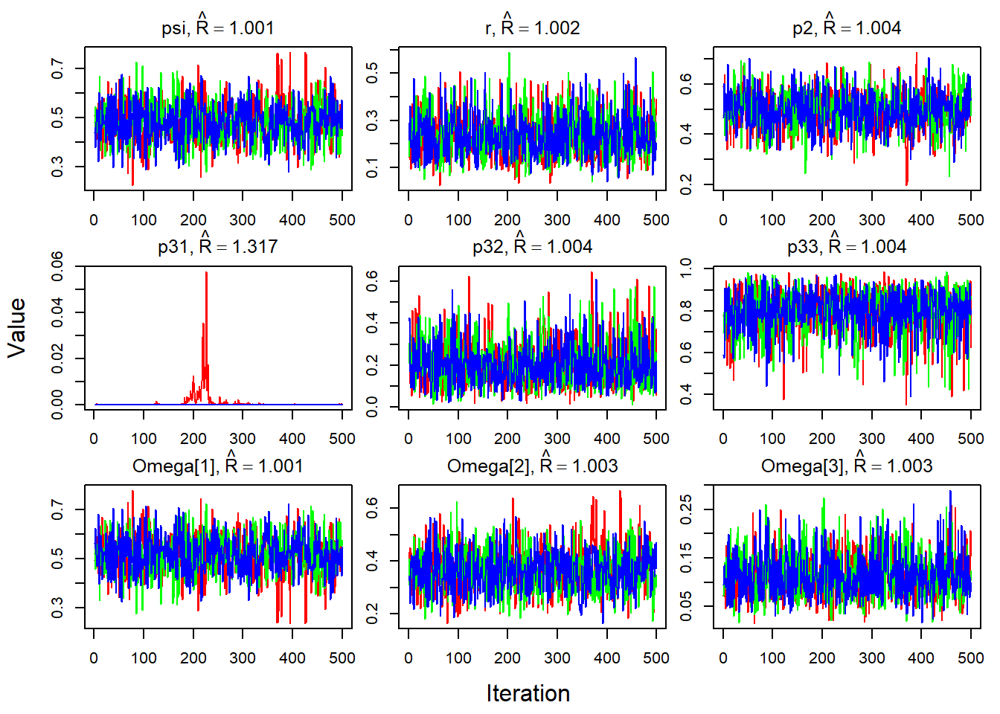
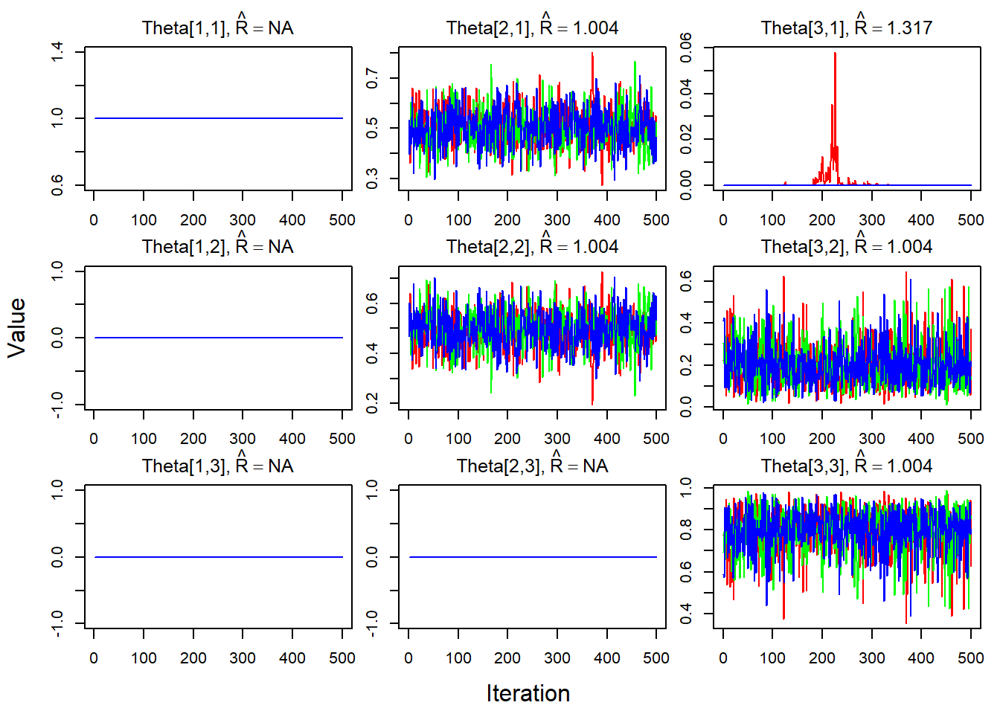
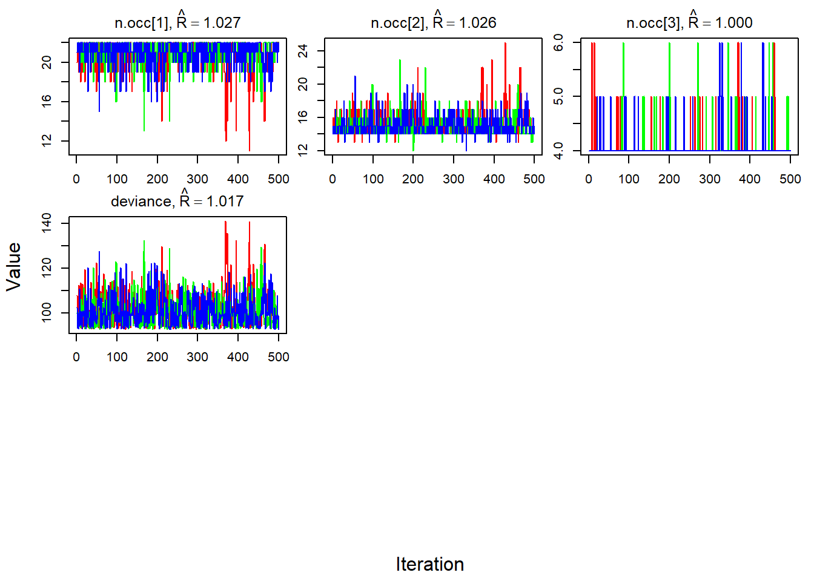
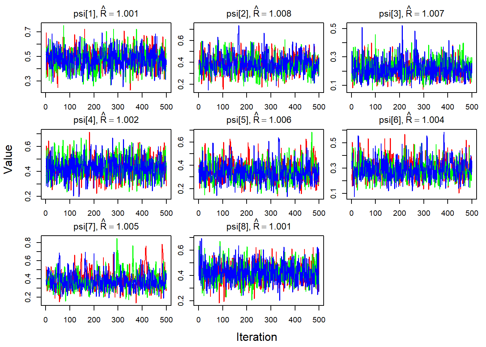
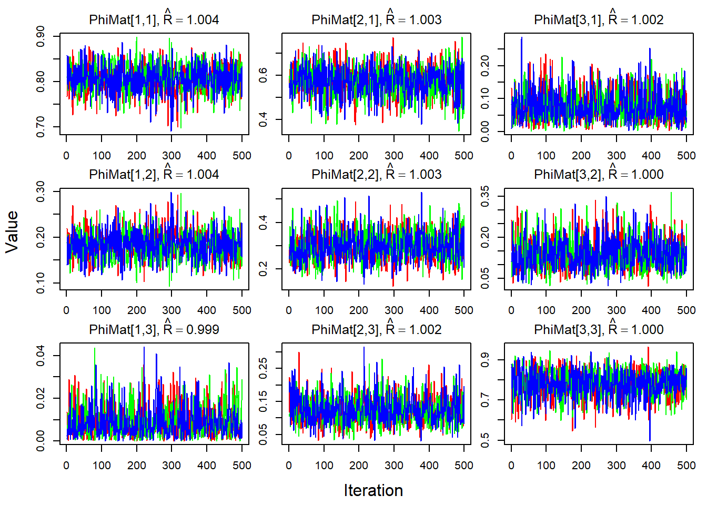

psi <- 0.5 # Expected proportion of occupied sites
r <- 0.3 # Proportion of those occupied sites that have many bats (third state)Dynamic Multistate Occupancy Model
Calling this a self tutorial
Source
I am following the Kery and Royle book, Applied hierarchical modeling in Ecology, Vol 2, Chapter 6. I am basically writing this document so that I understand what is going on in the book, and adapt it to my own work with bats. So, my references here will be to bats instead of birds, but I have deviated very little from the overall text in the book.
Introduction
In multi-state models you distinguish between two or more states of an occupied site. For us, this means that each site (10x10 km grid) has multiple states: - Unoccupied or empty - Occupied by a few bats - Occupied by many bats
I imagine that if we wanted to add complexity, we could have occupied sites divided also between those with detected Pd or not, but for now, we will stick to having no bats, a few bats, many bats (states 1, 2, and 3).
The difference between a static and a dynamic model is that the first one estimates how sites are distributed among those different states, whereas for a dynamic model we also estimate a state transition probability matrix, which basically describes how each site goes from one state to another. It is this time dependency that is different. Below, when we fit the models to the simulated data, the static model will estimate parameters for each season, whereas the dynamic one will estimate those parameters as well, in addition to the parameters associated to how sites change from one season to another.
Dynamic multi-state models typically represented as state-space models: observation model, initial state, and probabilistic rule of how it changes over time in a Markovian manner (in our case dependency only on the last year, so not a full history dependence):
- initial state vector Omega (\(\Omega\))
- state transition probability matrix Phi (\(\Phi\))
- observation matrix Theta (\(\Theta\))
Deriving the multi-state occupancy model
Question for experts: what would be the number of bats we are associating to these few bats and many bats?
We have three different states, or two states of occupancy: unoccupied (coded as 1), few bats (coded as 2), many bats (coded as 3). For the observation data we will use \(y_{i,j,t}\) where \(i\) sites are identified (\(i = 1\dots M\)) and \(j\) is the index for surveys (\(j = 1\dots J\)), and \(t\) for time or year in our case (\(t = 1\dots T\)). Keep in mind that \(y\) are observed states, and the true state for each site is denoted by \(z\), which is modeled as a latent variable in the state model. The relationship between the true and observed states is described by the observation model.
To model the different occupancy states we use a Multinomial distribution, and for the first season of the dynamic model the state of a site is:
\[ z_i \sim Categorical(\Omega_i) \]
where the state vector for site \(i\) (\(\Omega_i\)) has the probabilities with which site \(i\) is in any of the three states described above:
\[ \Omega_i = [\phi_1 \quad \phi_2 \quad \phi_3]_i, \]
and so the probability of site \(i\) being in state \(s\) is given by \(\phi_s\). Given that these are all probabilities, they are all values between 0 and 1, and together they sum up to 1. This means that we can express them in terms of another or reparameterize. This is necessary later on to reduce the number of parameters we estimate.
The observation model is able to link the true and observed state, and so it is also expressed as a Categorical distribution, conditional on the true state of the site. We write this:
\[ y_{i,j,t} | z_{i,t} \sim Categorical(\Theta_{z_i, o_{i,j}, i, j, t}) \]
The observation array (\(\Theta_{z_i, o_{i,j}, i, j, t}\)) has five dimensions: the true state of site \(i\) (\(z_i\)), the observed state for the same site at survey \(j\) (\(o_{i,j}\)), the site \(i\), the survey \(j\), and the year \(t\). We can map the first two dimensions, which are probabilities, where the rows correspond to the true states, and the columns correspond to the observed states for a specific site, survey, and year (\(i,j,t\)):
\[ \Theta_{z, o, i, j, t} = \begin{bmatrix} p_{11} & p_{12} & p_{13}\\ p_{21} & p_{22} & p_{23}\\ p_{31} & p_{32} & p_{33} \end{bmatrix}_{i,j,t} \]
And so \(p_{11}\) is the probability that an unoccupied site is observed as unoccupied. Similarly, \(p_{23}\) is the probability that a site occupied by few bats (state 2) is observed as occupied by many bats (state 3); this actually doesn’t make sense and so would be a zero. Additionally, \(p_{12}\) and \(p_{13}\) are false-positive probabilities (if the site is unoccupied, then you wouldn’t be able to observe few or many bats). We can simplify this matrix as follows:
\[ \Theta_{z, o, i, j, t} = \begin{bmatrix} 1 & 0 & 0\\ 1-p_{2} & p_{2} & 0\\ 1-p_{32}-p_{33} & p_{32} & p_{33} \end{bmatrix}_{i,j,t} \]
However, if we think about more complex models, with more states, this way of simplifying might not be as useful. Alternatively, we can reparameterize that last row as a conditional Binomial, where \(p_3\) is the probability of detecting any occupation at a site with many bats, and \(\delta\) is the conditional probability of detecting many bats given detection:
\[ \Theta_{z, o, i, j, t} = \begin{bmatrix} 1 & 0 & 0\\ 1-p_{2} & p_{2} & 0\\ 1-p_{3} & p_{3}(1-\delta) & p_{3}\delta \end{bmatrix}_{i,j,t} \]
The last parameter here at [3,3] now reads that the probability of detecting many bats in a site with many bats (\(p_3 \delta\)) is the probability of detecting bats at that site (\(p_3\)), and that we detect many bats (\(\delta\)). Also, \(p2\) is the probability that we detect a few bats at a site that is occupied by a few bats.
Next, we describe the dynamics of the model by writing down the state transition probabilities (example would be a site going from unoccupied to having many bats from year 0 to year 1). For every transition at \(t = 2\dots T\), it depends on the previous year, and for every site we have:
\[ z_{i,t}|z_{i,t-1}\sim \Phi_{z{(t-1)}, z{(t)}, i,t} \]
where the transition matrix is described by \(\Phi\) (Phi). Keep in mind that the \(j\) index is gone, because we are talking about true states here.
\[ \Phi_{z{(t-1)}, z{(t)}, i,t} = \begin{bmatrix} \pi_{11} & \pi_{12} & \pi_{13} \\ \pi_{21} & \pi_{22} & \pi_{23} \\ \pi_{31} & \pi_{32} & \pi_{33} \end{bmatrix}_{i,t} \]
we can read \(\pi_{n,m,i,t}\) as the probability that site \(i\) transitions from state \(n\) in year \(t-1\) to state \(m\) in year \(t\). And we can also reparameterize this matrix.
\[ \Phi_{z{(t-1)}, z{(t)}, i,t} = \begin{bmatrix} 1-\phi_1 & \phi_1(1-\rho_1) & \phi_1\rho_1 \\ 1-\phi_2 & \phi_2(1-\rho_2) & \phi_2\rho_2 \\ 1-\phi_3 & \phi_3(1-\rho_3) & \phi_3\rho_3 \end{bmatrix}_{i,t} \]
Similarly as we did before, we want to simplify this matrix and reparameterize using another conditional binomial. We focus on having \(\phi_x\) (phi) be the probability that site \(i\) in state \(x\) in year \(t-1\) is occupied in year \(t\), and \(\rho_x\) (rho) as the conditional probability that an occupied site has many bats (third state), not just a few, given that it was in state \(x\) last year. In other words, \(\phi\) is the probability of going from any state to being occupied, and \(\rho\) is the probability that an occupied site has many bats this year given it has a few or many bats last year. As an example \(\phi_2(1-\rho_2)\) is the probability that a site that was occupied by a few bats last year is still occupied this year (\(\phi_2\)), and that given it is still occupied this year, that it has only a few bats (\(1-\rho_2\)) instead of many bats (\(\rho_2\)).
And we go back to this, where the observations are dependent on the underlying state, and that underlying state is dependent on the state of the previous year:
\[ y_{i,j,t} | z_{i,t} \sim Categorical(\Theta_{z_i, o_{i,j}, i, j, t}) \]
The observation at a given site, survey, and year is conditional on the true state of that site in that year.
Simulation
Simplest case: no dependency of parameters on site, survey, or year
Model description
Simulate data with three latent occupancy and three observation states, where the observation and transition matrices remain constant and are the same for all sites.
True state on the initial year (\(z_{i,t}\)) where \(t=1\). Here, for each site, the initial state is drawn according to the probabilities specified in \(\Omega\). So, the probability that a site in year 1 will be occupied (\(\psi\)), and will also have many bats (\(r\)) is determined by their product \(\psi r\).
\[ z_{i,1}\sim Categorical(\Omega), \text{with} \quad \Omega = [1-\psi \quad \psi(1-r) \quad \psi r] \]
Incorporating time with the transition matrix Phi (\(\Phi\)). Notice the lack of sub indices for the matrix. This means that we use that same matrix for all years, meaning that the probability for sites to go from one state to another is the same every year. For example, if at year 3 we were to add bat boxes to empty sites to encourage a few bats moving in, then our transition matrix from year 3 might be different to the transition matrix in other years. In the case of year 3, we might change the values for \(\phi_1\) since we will be increasing th probability that unoccupied sites will be occupied the next year.
\[ z_{i,t}|z_{i,t-1} \sim Categorical(\Phi_{z{(t-1)}, z{(t)}}), \text{with} \quad \Phi_{z{(t-1)}, z{(t)}} = \begin{bmatrix} 1-\phi_1 & \phi_1(1-\rho_1) & \phi_1\rho_1 \\ 1-\phi_2 & \phi_2(1-\rho_2) & \phi_2\rho_2 \\ 1-\phi_3 & \phi_3(1-\rho_3) & \phi_3\rho_3 \end{bmatrix} \]
Observations are also not dependent on site, survey or year. So essentially, the probability that we observe a site given it’s latent state will remain the same. But, as an example, if we were to get more sensitive acoustic equipment that allows for better detection of a few bats, then perhaps our \(p2\) would increase for those sites and years that have the more sensitive equipment.
\[ y_{i,j,t}|z_{i,t} \sim Categorical(\Theta_{z,o}), \text{with} \quad \Theta_{z, o} = \begin{bmatrix} 1 & 0 & 0\\ 1-p_{2} & p_{2} & 0\\ 1-p_{32}-p_{33} & p_{32} & p_{33} \end{bmatrix} \]
Pick parameters
We pick parameters for initial conditions first, associated to \(\Omega\), thus we need to set \(\psi\) and \(r\) (To refresh \(\Omega = [1-\psi \quad \psi(1-r) \quad \psi r]\)) to determine the probability of a site being empty, having a few bats, or many bats on the first year:
Set parameters for the transition matrix (\(\Phi\)). When we reparameterize, we set \(\phi_X\) as the probability of becoming occupied given the site was in any of the three states the previous year, which is why we have three different probabilities; therefore, \(\phi_1\) is the probability of becoming occupied given that the site was empty last year. For \(\rho_2\) we would have the probability of having many bats this year given that last year the occupied site had a few bats.
# Probability of becoming occupied
phi <- c(0.2, # If the site was empty last year
0.5, # If the site had a few bats last year
0.9) # If the site had many bats last year
# Probability of having many bats if the site becomes occupied
rho <- c(0.1, # Very unlikely. If the site last year was empty, chance of it becoming occupied with many bats is kind of low
0.25,
0.89) Set parameters for the observation matrix (\(\Theta\)):
p2 <- 0.5 # Detection probability for a site with a few bats
p32 <- 0.2 # Classification probability of a site with many bats to be classified as with few bats
p33 <- 0.8 # Classification prob. of a site with many bats as having many batsAssembling
First, we can create our initial state probability vector (\(\Omega = [1-\psi \quad \psi(1-r) \quad \psi r]\)):
Omega <- c(1-psi, psi*(1-r), psi*r)
Omega[1] 0.50 0.35 0.15which reads that the probability of a site’s initial state being unoccupied is 0.5, the probability of it being occupied by a few bats is 0.35, and the probability of it being occupied by many bats is 0.15. All for the first year.
Then, we build the transition matrix (\(\Phi\)):
\[ \Phi_{z{(t-1)}, z{(t)}} = \begin{bmatrix} 1-\phi_1 & \phi_1(1-\rho_1) & \phi_1\rho_1 \\ 1-\phi_2 & \phi_2(1-\rho_2) & \phi_2\rho_2 \\ 1-\phi_3 & \phi_3(1-\rho_3) & \phi_3\rho_3 \end{bmatrix} \]
Phi <- matrix(
c(1-phi[1], phi[1]*(1-rho[1]), phi[1]*rho[1],
1-phi[2], phi[2]*(1-rho[2]), phi[2]*rho[2],
1-phi[3], phi[3]*(1-rho[3]), phi[3]*rho[3]), ncol = 3, byrow = TRUE)
Phi [,1] [,2] [,3]
[1,] 0.8 0.180 0.020
[2,] 0.5 0.375 0.125
[3,] 0.1 0.099 0.801The transition matrix also tells us the probability of a site staying the same, for example being unoccupied on year \(t\) given that it was unoccupied on year \(t-1\) is described by the (1,1) location on the matrix, (0.8).
And, our observation matrix (\(\Theta\)):
\[ \Theta_{z, o} = \begin{bmatrix} 1 & 0 & 0\\ 1-p_{2} & p_{2} & 0\\ 1-p_{32}-p_{33} & p_{32} & p_{33} \end{bmatrix} \]
Theta <- matrix(
c(
1, 0, 0,
1-p2, p2, 0,
1-p32-p33, p32, p33
), ncol = 3, byrow = TRUE
)
Theta [,1] [,2] [,3]
[1,] 1.0 0.0 0.0
[2,] 0.5 0.5 0.0
[3,] 0.0 0.2 0.8Simulation
We will run a short simulation:
nsites <- 40 # Equivalent to "M"
nsurveys <- 4 # ... "J"
nyears <- 8 # ... "T"Empty arrays
Here, we build empty arrays to hold all the information, one for the latent states (\(z\)) and another for observations (\(y\)):
z <- array(NA, dim = c(nsites, nyears))
head(z) # every column is the year, and every row the site [,1] [,2] [,3] [,4] [,5] [,6] [,7] [,8]
[1,] NA NA NA NA NA NA NA NA
[2,] NA NA NA NA NA NA NA NA
[3,] NA NA NA NA NA NA NA NA
[4,] NA NA NA NA NA NA NA NA
[5,] NA NA NA NA NA NA NA NA
[6,] NA NA NA NA NA NA NA NAy <- array(NA, dim = c(nsites, nsurveys, nyears))
head(y) # here we have three dimensions. , , 1
[,1] [,2] [,3] [,4]
[1,] NA NA NA NA
[2,] NA NA NA NA
[3,] NA NA NA NA
[4,] NA NA NA NA
[5,] NA NA NA NA
[6,] NA NA NA NA
, , 2
[,1] [,2] [,3] [,4]
[1,] NA NA NA NA
[2,] NA NA NA NA
[3,] NA NA NA NA
[4,] NA NA NA NA
[5,] NA NA NA NA
[6,] NA NA NA NA
, , 3
[,1] [,2] [,3] [,4]
[1,] NA NA NA NA
[2,] NA NA NA NA
[3,] NA NA NA NA
[4,] NA NA NA NA
[5,] NA NA NA NA
[6,] NA NA NA NA
, , 4
[,1] [,2] [,3] [,4]
[1,] NA NA NA NA
[2,] NA NA NA NA
[3,] NA NA NA NA
[4,] NA NA NA NA
[5,] NA NA NA NA
[6,] NA NA NA NA
, , 5
[,1] [,2] [,3] [,4]
[1,] NA NA NA NA
[2,] NA NA NA NA
[3,] NA NA NA NA
[4,] NA NA NA NA
[5,] NA NA NA NA
[6,] NA NA NA NA
, , 6
[,1] [,2] [,3] [,4]
[1,] NA NA NA NA
[2,] NA NA NA NA
[3,] NA NA NA NA
[4,] NA NA NA NA
[5,] NA NA NA NA
[6,] NA NA NA NA
, , 7
[,1] [,2] [,3] [,4]
[1,] NA NA NA NA
[2,] NA NA NA NA
[3,] NA NA NA NA
[4,] NA NA NA NA
[5,] NA NA NA NA
[6,] NA NA NA NA
, , 8
[,1] [,2] [,3] [,4]
[1,] NA NA NA NA
[2,] NA NA NA NA
[3,] NA NA NA NA
[4,] NA NA NA NA
[5,] NA NA NA NA
[6,] NA NA NA NA# An array for every year separately, where each column is the survey, and rows are sites.Initial states Y1
So, what we want to do now is fill these arrays with numbers based on the probability values we set earlier, using a multinomial distribution and the probabilities we calculated for the initial state, transition, and observation matrices. As an example, we take the first year using the initial state vector \(\Omega\) (Omega):
rdraw <- rmultinom(nsites, 1, Omega)
rdraw [,1] [,2] [,3] [,4] [,5] [,6] [,7] [,8] [,9] [,10] [,11] [,12] [,13] [,14]
[1,] 1 1 1 0 1 1 1 1 0 0 1 0 0 1
[2,] 0 0 0 0 0 0 0 0 1 1 0 1 1 0
[3,] 0 0 0 1 0 0 0 0 0 0 0 0 0 0
[,15] [,16] [,17] [,18] [,19] [,20] [,21] [,22] [,23] [,24] [,25] [,26]
[1,] 0 0 0 0 1 0 0 1 1 1 0 1
[2,] 1 1 1 0 0 0 0 0 0 0 1 0
[3,] 0 0 0 1 0 1 1 0 0 0 0 0
[,27] [,28] [,29] [,30] [,31] [,32] [,33] [,34] [,35] [,36] [,37] [,38]
[1,] 1 0 1 1 1 1 0 0 1 1 1 0
[2,] 0 1 0 0 0 0 1 1 0 0 0 1
[3,] 0 0 0 0 0 0 0 0 0 0 0 0
[,39] [,40]
[1,] 0 0
[2,] 1 1
[3,] 0 0In the code above, each column represents a site (with a total of 40), and each row is the state. Thus, the firs row corresponds to unoccupied, second row for few bats, and third row for many bats. For this first year, the probability that each site falls under one of those states is given by \(\Omega\), that if we remember from above was a vector length three (one probability for each state) with the values 0.5, 0.35, 0.15
# This function is built in the book but I couldn't understand it at first.
# It basically asks, in which row is the number 1, versus the zeroes.
# So we know the state for that site
get1<- function(x) which(x==1)
set.seed(1)
# In this case, each site has the row number
# that corresponds to the state of the site (unoccupied, few bats, many bats)
# we save this as the first column in our z array
z[,1] <- apply(rdraw, 2, FUN = get1)
z[,1] [1] 1 1 1 3 1 1 1 1 2 2 1 2 2 1 2 2 2 3 1 3 3 1 1 1 2 1 1 2 1 1 1 1 2 2 1 1 1 2
[39] 2 2Let’s take a loot just at the first few sites so we can compare:
rdraw[,1:5] [,1] [,2] [,3] [,4] [,5]
[1,] 1 1 1 0 1
[2,] 0 0 0 0 0
[3,] 0 0 0 1 0z[1:5,1][1] 1 1 1 3 1And also, since we have only done the first year, all the other years should be NAs:
head(z) [,1] [,2] [,3] [,4] [,5] [,6] [,7] [,8]
[1,] 1 NA NA NA NA NA NA NA
[2,] 1 NA NA NA NA NA NA NA
[3,] 1 NA NA NA NA NA NA NA
[4,] 3 NA NA NA NA NA NA NA
[5,] 1 NA NA NA NA NA NA NA
[6,] 1 NA NA NA NA NA NA NAStates Z matrix
Fill in the true state for other years, but this time, we need to incorporate the state of the previous year. I am breaking up the code a little to explain it to myself. Take as an example the first site and second year:
i <- 1 # site 1
t <- 2 #second yearAnd remember the transition probability matrix:
Phi # Transition probability matrix [,1] [,2] [,3]
[1,] 0.8 0.180 0.020
[2,] 0.5 0.375 0.125
[3,] 0.1 0.099 0.801Now, find the state for the first site last year (on year 1):
z[i, t-1] # the true state for site i last year[1] 1Given the state of that site last year, what are the probabilities of that site either staying the same or transitioning to the other two states:
Phi[z[i, t-1],] # the vector of transition probabilities for a given state[1] 0.80 0.18 0.02Now, we use those probabilities (of the site staying the same or transitioning to other states) to sample from a multinomial distribution and figure out what happens next:
year_t <- rmultinom(1,1, Phi[z[i, t-1],])
year_t [,1]
[1,] 1
[2,] 0
[3,] 0and we use the same function as before so it categorizes this as a 1, 2, or 3, for the site, depending on its true state,
get1(year_t)[1] 1We can do this for all the sites and years using a for loop:
for(i in 1:nsites){
for(t in 2:nyears){
z[i,t] <- get1(rmultinom(1, 1, Phi[z[i, t-1],]))
}
}
head(z) [,1] [,2] [,3] [,4] [,5] [,6] [,7] [,8]
[1,] 1 1 1 2 1 2 1 1
[2,] 1 1 1 1 1 1 1 1
[3,] 1 2 1 2 1 1 1 1
[4,] 3 3 3 3 3 3 3 3
[5,] 1 2 1 1 1 1 1 1
[6,] 1 1 1 1 2 2 2 1Observations Y matrix
Finally, we get to the observations. Remember that each observation is conditional on the true underlying state (\(z\), what we just simulated above). We use the observation matrix (\(\Theta\)) here. Later on, these probabilities for the observation matrix depend on different detection covariates. To refresh, we set the observation matrix to:
Theta [,1] [,2] [,3]
[1,] 1.0 0.0 0.0
[2,] 0.5 0.5 0.0
[3,] 0.0 0.2 0.8First row reads that the probability of observing a site as unoccupied, given that it’s true state is unoccupied equals 1. The second row then says that given that a site has a few bats, we can either observe it as unoccupied or as occupied by a few bats with a 50:50 chance. And finally, the third row, for a site with many bats, the probability of observing no bats is 0, of observing a few bats is 0.2, or observing many bats is 0.8.
As an example then, if we consider the first site on the first year
z[1,1][1] 1then, we ask, what is the probability of seeing no bats, few bats, or many bats, given that the true underlying state is many bats?
Theta[z[1,1],][1] 1 0 0and so, the realization of this random process for the 4 surveys would look like:
surveydraw <- rmultinom(nsurveys, 1, Theta[z[1,1],])
surveydraw [,1] [,2] [,3] [,4]
[1,] 1 1 1 1
[2,] 0 0 0 0
[3,] 0 0 0 0We do this for all sites and years:
for(i in 1:nsites){
for(t in 1:nyears){
y[i,,t] <- apply(rmultinom(nsurveys, 1, Theta[z[i,t],]), 2, get1)
}
}
# Example of the first site
y[1,,] [,1] [,2] [,3] [,4] [,5] [,6] [,7] [,8]
[1,] 1 1 1 1 1 2 1 1
[2,] 1 1 1 2 1 1 1 1
[3,] 1 1 1 2 1 2 1 1
[4,] 1 1 1 2 1 2 1 1Explore
We can explore some sites, for example below you will see the state during the five years for the first six sites:
head(z) [,1] [,2] [,3] [,4] [,5] [,6] [,7] [,8]
[1,] 1 1 1 2 1 2 1 1
[2,] 1 1 1 1 1 1 1 1
[3,] 1 2 1 2 1 1 1 1
[4,] 3 3 3 3 3 3 3 3
[5,] 1 2 1 1 1 1 1 1
[6,] 1 1 1 1 2 2 2 1we can focus on the second row, site 2, and we see that for the first two years the site had (a few bats), then on years three and four, it gets occupied by many bats and year five through seven, there’s a decline to no bats, and then the last year we have a few bats again.
Our observations for site 2 are shown below, where each row is a survey, and the columns correspond to each year. If we had perfect detection, each row should look the same as the second row in the matrix above.
y[2,,] [,1] [,2] [,3] [,4] [,5] [,6] [,7] [,8]
[1,] 1 1 1 1 1 1 1 1
[2,] 1 1 1 1 1 1 1 1
[3,] 1 1 1 1 1 1 1 1
[4,] 1 1 1 1 1 1 1 1# save these for later
save.image()Model fitting
Static single-season
Model description
So, in this case we are only taking data from the first year, which means no estimating parameters of the transition matrix, etc. We basically just take a snapshot and we care about estimating the parameters associated to the state and the observation. The question it asks is, what is the occupancy for a site now? I think this is what it does:
The underlying true state:
\[ z_i \sim Categorical(\Omega) \quad \text{with} \quad \Omega = [1-\psi \quad \psi(1-r) \quad \psi r] \]
And the observations given that state for each site:
\[ y_i|z_i \sim Categorical(\Theta) \quad \text{with} \quad \Theta_{z, o} = \begin{bmatrix} 1 & 0 & 0\\ 1-p_{2} & p_{2} & 0\\ 1-p_{32}-p_{33} & p_{32} & p_{33} \end{bmatrix} \]
If you count the number of parameters here, I think we are trying to estimate only 5: \(\psi\), \(r\), \(p_2\), \(p_{32}\), \(p_{33}\) , since \(p_{31} = 1-p_{32}-p_{33}\).
The model to fit this uses a Gaussian prior for the logit of \(p32\) and \(p33\) so that it allows for the modeling of covariates (which we are not doing here) but it would look like this:
The priors:
\[ lp_{32} \sim Normal(0,0.001)\\ lp_{33} \sim Normal(0,0.001) \]
The multinomial link:
\[ p_{32} = \exp(lp_{32})/(1+\exp(lp_{32}) + \exp(lp_{33})) \\ p_{33} = \exp(lp_{33})/(1+\exp(lp_{32}) + \exp(lp_{33})) \]
So that we could do GLM type things:
\[ lp_{32} = \alpha_1 + \beta_1 * X + \epsilon_1 \\ lp_{33} = \alpha_2 + \beta_2 * X + \epsilon_2 \]
Model code
# Get data for one year
str(y1 <- y[,,1]) int [1:40, 1:4] 1 1 1 3 1 1 1 1 2 2 ...# tabulate observed data for each site
ttab <- array(0, dim = c(nsites, 3)) # sites by number of states
colnames(ttab) <- c('nobats', 'fewbats', 'manybats')
for(i in 1:nsites){
tt <- table(y1[i,])
ttab[i, as.numeric(names(tt))] <- tt
}
head(ttab) # guessing sum of the row should be 3, for the three surveys nobats fewbats manybats
[1,] 4 0 0
[2,] 4 0 0
[3,] 4 0 0
[4,] 0 1 3
[5,] 4 0 0
[6,] 4 0 0# compare to the true state and summary of observed states
head(data.frame('truestate' = z[,1], ttab)) truestate nobats fewbats manybats
1 1 4 0 0
2 1 4 0 0
3 1 4 0 0
4 3 0 1 3
5 1 4 0 0
6 1 4 0 0Getting to fit the data, lets see if this works or not.
# Bundle data
str(bdata <- list(y = y1, nsites = nrow(y1), nsurveys = ncol(y1)))List of 3
$ y : int [1:40, 1:4] 1 1 1 3 1 1 1 1 2 2 ...
$ nsites : int 40
$ nsurveys: int 4# Specify model
cat(file = '../dyn_multistate_occu/static1.txt', "
model {
# Priors
psi ~ dunif(0,1)
r ~ dunif(0,1)
p2 ~ dunif(0,1)
# Multinomial logit link for observation model for state 3 (many bats)
lp32 ~ dnorm(0, 0.001)
lp33 ~ dnorm(0, 0.001)
p32 <- exp(lp32) / (1 + exp(lp32) + exp(lp33))
p33 <- exp(lp33) / (1 + exp(lp32) + exp(lp33))
p31 <- 1-p32-p33
# Define initial state vector Omega
Omega[1] <- 1 - psi
Omega[2] <- psi * (1-r)
Omega[3] <- psi * r
# Define observation matrix
Theta[1,1] <- 1
Theta[1,2] <- 0
Theta[1,3] <- 0
Theta[2,1] <- 1-p2
Theta[2,2] <- p2
Theta[2,3] <- 0
Theta[3,1] <- p31
Theta[3,2] <- p32
Theta[3,3] <- p33
# State-space likelihood
# State equation: the true states
for (i in 1:nsites) {
z[i] ~ dcat(Omega[])
}
# Observation equation
for (i in 1:nsites) {
for (j in 1:nsurveys) {
y[i,j] ~ dcat(Theta[z[i],])
}
}
# Derived quantities
for (i in 1:nsites) {
occ1[i] <- equals(z[i], 1)
occ2[i] <- equals(z[i], 2)
occ3[i] <- equals(z[i], 3)
}
n.occ[1] <- sum(occ1[]) # Total number of sites in state 1
n.occ[2] <- sum(occ2[])
n.occ[3] <- sum(occ3[])
}
")
# The previous chunk just gets the model saves as a text file in this directory# Initial values
zst <- rep(3, nrow(bdata$y)) # initialize at highest possible state
inits <- function() {list(
z = zst
)}
# Parameters monitored
params <- c("psi", "r", "p2", "p31", "p32", "p33", "Omega", "Theta", "n.occ")
# MCMC settings
na <- 1000 ; ni <- 2000 ; nt <- 2 ; nb <- 1000 ; nc <- 3
# Call JAGS
library(jagsUI)
out1 <- jags(bdata, inits, params, "../dyn_multistate_occu/static1.txt", n.adapt = na, n.chains = nc, n.thin = nt, n.iter = ni, n.burnin = nb,
parallel = TRUE)
Processing function input.......
Done.
Beginning parallel processing using 3 cores. Console output will be suppressed.
Parallel processing completed.
Calculating statistics....... Warning in doTryCatch(return(expr), name, parentenv, handler): At least one Rhat
value could not be calculated.
Done. Output figures
par(mfrow =c(4,4))
traceplot(out1)


Output params
print(out1)JAGS output for model '../dyn_multistate_occu/static1.txt', generated by jagsUI.
Estimates based on 3 chains of 2000 iterations,
adaptation = 1000 iterations (sufficient),
burn-in = 1000 iterations and thin rate = 2,
yielding 1500 total samples from the joint posterior.
MCMC ran in parallel for 0.042 minutes at time 2022-09-14 15:58:27.
mean sd 2.5% 50% 97.5% overlap0 f Rhat n.eff
psi 0.480 0.081 0.331 0.478 0.649 FALSE 1 1.001 1500
r 0.239 0.093 0.089 0.231 0.451 FALSE 1 1.002 802
p2 0.494 0.076 0.341 0.492 0.643 FALSE 1 1.004 436
p31 0.000 0.002 0.000 0.000 0.002 TRUE 1 1.317 64
p32 0.204 0.108 0.048 0.188 0.449 FALSE 1 1.004 840
p33 0.796 0.108 0.551 0.812 0.951 FALSE 1 1.004 955
Omega[1] 0.520 0.081 0.351 0.522 0.669 FALSE 1 1.001 1500
Omega[2] 0.366 0.081 0.221 0.363 0.532 FALSE 1 1.003 1500
Omega[3] 0.114 0.046 0.037 0.109 0.217 FALSE 1 1.003 641
Theta[1,1] 1.000 0.000 1.000 1.000 1.000 FALSE 1 NA 1
Theta[2,1] 0.506 0.076 0.357 0.508 0.659 FALSE 1 1.004 436
Theta[3,1] 0.000 0.002 0.000 0.000 0.002 TRUE 1 1.317 64
Theta[1,2] 0.000 0.000 0.000 0.000 0.000 FALSE 1 NA 1
Theta[2,2] 0.494 0.076 0.341 0.492 0.643 FALSE 1 1.004 436
Theta[3,2] 0.204 0.108 0.048 0.188 0.449 FALSE 1 1.004 840
Theta[1,3] 0.000 0.000 0.000 0.000 0.000 FALSE 1 NA 1
Theta[2,3] 0.000 0.000 0.000 0.000 0.000 FALSE 1 NA 1
Theta[3,3] 0.796 0.108 0.551 0.812 0.951 FALSE 1 1.004 955
n.occ[1] 20.831 1.431 17.000 21.000 22.000 FALSE 1 1.027 207
n.occ[2] 15.095 1.417 14.000 15.000 19.000 FALSE 1 1.026 190
n.occ[3] 4.074 0.300 4.000 4.000 5.000 FALSE 1 1.000 1500
deviance 101.436 7.480 92.963 99.772 119.632 FALSE 1 1.017 241
**WARNING** Rhat values indicate convergence failure.
Rhat is the potential scale reduction factor (at convergence, Rhat=1).
For each parameter, n.eff is a crude measure of effective sample size.
overlap0 checks if 0 falls in the parameter's 95% credible interval.
f is the proportion of the posterior with the same sign as the mean;
i.e., our confidence that the parameter is positive or negative.
DIC info: (pD = var(deviance)/2)
pD = 27.8 and DIC = 129.215
DIC is an estimate of expected predictive error (lower is better).Static Multi-season model
Model description
The next logical step is to consider all the years. So, previously we took only the data for the first year, and now we will use all the years for this, and fit separate parameters for each year. Now, the state for each site varies by year, with year-specific \(\psi\) and \(r\) parameters, but we don’t consider here any transition probabilities.
The underlying state now has time, so it looks like this:
\[ z_{i,t}\sim Categorical(\Omega_t), \text{with} \quad \Omega_t = [1-\psi_t \quad \psi_t(1-r_t) \quad \psi_t r_t] \]
And observations given by:
\[ y_{i,j,t}|z_{i,t} \sim Categorical(\Theta_{z,o,i,j,t}), \text{with} \quad \Theta_{z, o,i,j,t} = \begin{bmatrix} 1 & 0 & 0\\ 1-p_{2}t & p_{2} & 0\\ 1-p_{32}-p_{33} & p_{32} & p_{33} \end{bmatrix}_{i,j,t} \]
Model Code
# Bundle data
str(bdata <- list(y = y, nsites = dim(y)[1], nsurveys = dim(y)[2], nyears = dim(y)[3]))List of 4
$ y : int [1:40, 1:4, 1:8] 1 1 1 3 1 1 1 1 2 2 ...
$ nsites : int 40
$ nsurveys: int 4
$ nyears : int 8# We specify the model
cat(file = '../dyn_multistate_occu/static2.txt', "
model {
# Priors for each year (you will notice these are the same as single season, but now with a t index)
for (t in 1:nyears) {
psi[t] ~ dunif(0,1)
r[t] ~ dunif(0,1)
p2[t] ~ dunif(0,1)
#Multinomial logit link
lp32[t] ~ dnorm(0, 0.001)
lp33[t] ~ dnorm(0, 0.001)
p32[t] <- exp(lp32[t]) / (1 + exp(lp32[t]) + exp(lp33[t]))
p33[t] <- exp(lp33[t]) / (1 + exp(lp32[t]) + exp(lp33[t]))
p31[t] <- 1-p32[t]-p33[t]
}
# Define initial state vector Omega for each year
for (t in 1:nyears) {
Omega[t,1] <- 1 - psi[t]
Omega[t,2] <- psi[t] * (1-r[t])
Omega[t,3] <- psi[t] * r[t]
}
# Define observation matrix for each year
# The order of the indices is true state, year, observed state
for (t in 1:nyears) {
Theta[1,t,1] <- 1
Theta[1,t,2] <- 0
Theta[1,t,3] <- 0
Theta[2,t,1] <- 1-p2[t]
Theta[2,t,2] <- p2[t]
Theta[2,t,3] <- 0
Theta[3,t,1] <- p31[t]
Theta[3,t,2] <- p32[t]
Theta[3,t,3] <- p33[t]
}
# State-space likelihood
# Define separate parameters of state and observation equation for each year
for (t in 1:nyears) {
for (i in 1:nsites) {
z[i,t] ~ dcat(Omega[t,]) # This is the state equation
for (j in 1:nsurveys) {
y[i,j,t] ~ dcat(Theta[z[i,t],t,]) # Observation equation
}
}
}
# Derived quantities
for (t in 1:nyears) {
for (i in 1:nsites) {
occ1[i,t] <- equals(z[i,t], 1)
occ2[i,t] <- equals(z[i,t], 2)
occ3[i,t] <- equals(z[i,t], 3)
}
n.occ[t,1] <- sum(occ1[,t])
n.occ[t,2] <- sum(occ2[,t])
n.occ[t,3] <- sum(occ3[,t])
}
}
")
# Initial values
zst <- array(3, dim = c(bdata$nsites, bdata$nyears))
inits <- function() {list(z = zst)}
#Parameters monitored
params <- c("psi", "r", "p2", "p31", "p32", "p33", "Omega", "Theta", "n.occ")
# MCMC settings
na <- 1000 ; ni <- 2000 ; nt <- 2 ; nb <- 1000 ; nc <- 3
# Call JAGS
library(jagsUI)
out2 <- jags(bdata, inits, params, "../dyn_multistate_occu/static2.txt", n.adapt = na, n.chains = nc, n.thin = nt, n.iter = ni, n.burnin = nb,
parallel = TRUE)
Processing function input.......
Done.
Beginning parallel processing using 3 cores. Console output will be suppressed.
Parallel processing completed.
Calculating statistics....... Warning in doTryCatch(return(expr), name, parentenv, handler): At least one Rhat
value could not be calculated.
Done. Output figures
par(mfrow=c(3,3))
# Because we have many plots, we are just going to plot a few for an example
traceplot(out2, parameters = "psi")
Output parameters
print(out2)JAGS output for model '../dyn_multistate_occu/static2.txt', generated by jagsUI.
Estimates based on 3 chains of 2000 iterations,
adaptation = 1000 iterations (sufficient),
burn-in = 1000 iterations and thin rate = 2,
yielding 1500 total samples from the joint posterior.
MCMC ran in parallel for 0.278 minutes at time 2022-09-14 15:58:32.
mean sd 2.5% 50% 97.5% overlap0 f Rhat n.eff
psi[1] 0.477 0.081 0.320 0.474 0.643 FALSE 1 1.001 1191
psi[2] 0.385 0.082 0.233 0.380 0.563 FALSE 1 1.008 290
psi[3] 0.219 0.064 0.112 0.214 0.357 FALSE 1 1.007 1060
psi[4] 0.433 0.082 0.276 0.430 0.601 FALSE 1 1.002 1089
psi[5] 0.345 0.087 0.195 0.339 0.542 FALSE 1 1.006 486
psi[6] 0.292 0.077 0.159 0.287 0.459 FALSE 1 1.004 1045
psi[7] 0.381 0.097 0.223 0.371 0.604 FALSE 1 1.005 676
psi[8] 0.420 0.078 0.281 0.417 0.573 FALSE 1 1.001 1500
r[1] 0.237 0.091 0.084 0.228 0.441 FALSE 1 1.000 1500
r[2] 0.409 0.118 0.189 0.404 0.648 FALSE 1 1.002 1390
r[3] 0.594 0.148 0.300 0.601 0.856 FALSE 1 1.001 1173
r[4] 0.263 0.093 0.102 0.256 0.465 FALSE 1 1.000 1500
r[5] 0.395 0.128 0.172 0.388 0.662 FALSE 1 1.001 1500
r[6] 0.312 0.129 0.100 0.298 0.589 FALSE 1 1.000 1500
r[7] 0.482 0.135 0.248 0.475 0.744 FALSE 1 1.000 1500
r[8] 0.384 0.111 0.183 0.379 0.608 FALSE 1 1.000 1500
p2[1] 0.500 0.074 0.353 0.503 0.640 FALSE 1 0.999 1500
p2[2] 0.453 0.096 0.258 0.456 0.636 FALSE 1 1.006 379
p2[3] 0.700 0.124 0.438 0.710 0.905 FALSE 1 1.003 834
p2[4] 0.482 0.077 0.334 0.482 0.631 FALSE 1 1.002 964
p2[5] 0.407 0.106 0.207 0.405 0.619 FALSE 1 1.002 1500
p2[6] 0.408 0.102 0.216 0.406 0.616 FALSE 1 1.000 1500
p2[7] 0.335 0.112 0.142 0.331 0.563 FALSE 1 1.000 1500
p2[8] 0.542 0.084 0.374 0.543 0.696 FALSE 1 1.002 715
p31[1] 0.002 0.013 0.000 0.000 0.012 TRUE 1 1.289 102
p31[2] 0.000 0.001 0.000 0.000 0.001 TRUE 1 1.164 178
p31[3] 0.003 0.013 0.000 0.000 0.033 TRUE 1 1.192 57
p31[4] 0.002 0.013 0.000 0.000 0.027 FALSE 1 1.132 108
p31[5] 0.003 0.013 0.000 0.000 0.038 FALSE 1 1.096 92
p31[6] 0.007 0.021 0.000 0.000 0.068 FALSE 1 1.208 35
p31[7] 0.001 0.004 0.000 0.000 0.007 FALSE 1 1.218 109
p31[8] 0.000 0.003 0.000 0.000 0.005 FALSE 1 1.153 112
p32[1] 0.193 0.101 0.044 0.178 0.426 FALSE 1 1.002 1500
p32[2] 0.210 0.081 0.074 0.202 0.393 FALSE 1 1.003 599
p32[3] 0.153 0.080 0.034 0.143 0.335 FALSE 1 1.001 1498
p32[4] 0.371 0.119 0.166 0.365 0.614 FALSE 1 1.000 1500
p32[5] 0.150 0.079 0.032 0.139 0.342 FALSE 1 1.001 1500
p32[6] 0.329 0.130 0.114 0.318 0.606 FALSE 1 0.999 1500
p32[7] 0.141 0.063 0.043 0.133 0.279 FALSE 1 1.000 1500
p32[8] 0.167 0.074 0.055 0.157 0.330 FALSE 1 1.003 1498
p33[1] 0.805 0.102 0.563 0.821 0.955 FALSE 1 1.004 1060
p33[2] 0.790 0.081 0.607 0.798 0.926 FALSE 1 1.003 587
p33[3] 0.844 0.081 0.662 0.854 0.965 FALSE 1 1.000 1500
p33[4] 0.627 0.119 0.384 0.631 0.834 FALSE 1 1.001 1220
p33[5] 0.847 0.080 0.653 0.859 0.967 FALSE 1 1.002 1500
p33[6] 0.664 0.130 0.389 0.675 0.879 FALSE 1 1.000 1500
p33[7] 0.858 0.063 0.720 0.865 0.957 FALSE 1 1.001 1500
p33[8] 0.833 0.074 0.670 0.843 0.945 FALSE 1 1.003 1400
Omega[1,1] 0.523 0.081 0.357 0.526 0.680 FALSE 1 1.001 1191
Omega[2,1] 0.615 0.082 0.437 0.620 0.767 FALSE 1 1.008 290
Omega[3,1] 0.781 0.064 0.643 0.786 0.888 FALSE 1 1.007 1060
Omega[4,1] 0.567 0.082 0.399 0.570 0.724 FALSE 1 1.002 1089
Omega[5,1] 0.655 0.087 0.458 0.661 0.805 FALSE 1 1.006 486
Omega[6,1] 0.708 0.077 0.541 0.713 0.841 FALSE 1 1.004 1045
Omega[7,1] 0.619 0.097 0.396 0.629 0.777 FALSE 1 1.005 676
Omega[8,1] 0.580 0.078 0.427 0.583 0.719 FALSE 1 1.001 1500
Omega[1,2] 0.364 0.078 0.220 0.357 0.526 FALSE 1 1.001 1500
Omega[2,2] 0.229 0.072 0.108 0.221 0.381 FALSE 1 1.011 333
Omega[3,2] 0.089 0.044 0.026 0.083 0.193 FALSE 1 1.000 1500
Omega[4,2] 0.319 0.074 0.187 0.316 0.473 FALSE 1 1.001 1089
Omega[5,2] 0.210 0.077 0.089 0.203 0.389 FALSE 1 1.003 1500
Omega[6,2] 0.202 0.069 0.089 0.194 0.363 FALSE 1 1.008 886
Omega[7,2] 0.202 0.087 0.078 0.188 0.413 FALSE 1 1.005 649
Omega[8,2] 0.259 0.069 0.141 0.253 0.409 FALSE 1 1.000 1500
Omega[1,3] 0.112 0.046 0.038 0.107 0.215 FALSE 1 1.000 1500
Omega[2,3] 0.156 0.053 0.067 0.151 0.272 FALSE 1 1.000 1500
Omega[3,3] 0.130 0.050 0.050 0.124 0.242 FALSE 1 1.004 655
Omega[4,3] 0.114 0.046 0.044 0.107 0.216 FALSE 1 1.000 1500
Omega[5,3] 0.134 0.051 0.051 0.128 0.252 FALSE 1 1.005 503
Omega[6,3] 0.090 0.043 0.025 0.083 0.188 FALSE 1 1.000 1500
Omega[7,3] 0.180 0.057 0.087 0.174 0.312 FALSE 1 0.999 1500
Omega[8,3] 0.161 0.055 0.069 0.155 0.278 FALSE 1 1.002 1500
Theta[1,1,1] 1.000 0.000 1.000 1.000 1.000 FALSE 1 NA 1
Theta[2,1,1] 0.500 0.074 0.360 0.497 0.647 FALSE 1 0.999 1500
Theta[3,1,1] 0.002 0.013 0.000 0.000 0.012 TRUE 1 1.289 102
Theta[1,2,1] 1.000 0.000 1.000 1.000 1.000 FALSE 1 NA 1
Theta[2,2,1] 0.547 0.096 0.364 0.544 0.742 FALSE 1 1.006 379
Theta[3,2,1] 0.000 0.001 0.000 0.000 0.001 TRUE 1 1.164 178
Theta[1,3,1] 1.000 0.000 1.000 1.000 1.000 FALSE 1 NA 1
Theta[2,3,1] 0.300 0.124 0.095 0.290 0.562 FALSE 1 1.003 834
Theta[3,3,1] 0.003 0.013 0.000 0.000 0.033 TRUE 1 1.192 57
Theta[1,4,1] 1.000 0.000 1.000 1.000 1.000 FALSE 1 NA 1
Theta[2,4,1] 0.518 0.077 0.369 0.518 0.666 FALSE 1 1.002 964
Theta[3,4,1] 0.002 0.013 0.000 0.000 0.027 FALSE 1 1.132 108
Theta[1,5,1] 1.000 0.000 1.000 1.000 1.000 FALSE 1 NA 1
Theta[2,5,1] 0.593 0.106 0.381 0.595 0.793 FALSE 1 1.002 1500
Theta[3,5,1] 0.003 0.013 0.000 0.000 0.038 FALSE 1 1.096 92
Theta[1,6,1] 1.000 0.000 1.000 1.000 1.000 FALSE 1 NA 1
Theta[2,6,1] 0.592 0.102 0.384 0.594 0.784 FALSE 1 1.000 1500
Theta[3,6,1] 0.007 0.021 0.000 0.000 0.068 FALSE 1 1.208 35
Theta[1,7,1] 1.000 0.000 1.000 1.000 1.000 FALSE 1 NA 1
Theta[2,7,1] 0.665 0.112 0.437 0.669 0.858 FALSE 1 1.000 1500
Theta[3,7,1] 0.001 0.004 0.000 0.000 0.007 FALSE 1 1.218 109
Theta[1,8,1] 1.000 0.000 1.000 1.000 1.000 FALSE 1 NA 1
Theta[2,8,1] 0.458 0.084 0.304 0.457 0.626 FALSE 1 1.002 715
Theta[3,8,1] 0.000 0.003 0.000 0.000 0.005 FALSE 1 1.153 112
Theta[1,1,2] 0.000 0.000 0.000 0.000 0.000 FALSE 1 NA 1
Theta[2,1,2] 0.500 0.074 0.353 0.503 0.640 FALSE 1 0.999 1500
Theta[3,1,2] 0.193 0.101 0.044 0.178 0.426 FALSE 1 1.002 1500
Theta[1,2,2] 0.000 0.000 0.000 0.000 0.000 FALSE 1 NA 1
Theta[2,2,2] 0.453 0.096 0.258 0.456 0.636 FALSE 1 1.006 379
Theta[3,2,2] 0.210 0.081 0.074 0.202 0.393 FALSE 1 1.003 599
Theta[1,3,2] 0.000 0.000 0.000 0.000 0.000 FALSE 1 NA 1
Theta[2,3,2] 0.700 0.124 0.438 0.710 0.905 FALSE 1 1.003 834
Theta[3,3,2] 0.153 0.080 0.034 0.143 0.335 FALSE 1 1.001 1498
Theta[1,4,2] 0.000 0.000 0.000 0.000 0.000 FALSE 1 NA 1
Theta[2,4,2] 0.482 0.077 0.334 0.482 0.631 FALSE 1 1.002 964
Theta[3,4,2] 0.371 0.119 0.166 0.365 0.614 FALSE 1 1.000 1500
Theta[1,5,2] 0.000 0.000 0.000 0.000 0.000 FALSE 1 NA 1
Theta[2,5,2] 0.407 0.106 0.207 0.405 0.619 FALSE 1 1.002 1500
Theta[3,5,2] 0.150 0.079 0.032 0.139 0.342 FALSE 1 1.001 1500
Theta[1,6,2] 0.000 0.000 0.000 0.000 0.000 FALSE 1 NA 1
Theta[2,6,2] 0.408 0.102 0.216 0.406 0.616 FALSE 1 1.000 1500
Theta[3,6,2] 0.329 0.130 0.114 0.318 0.606 FALSE 1 0.999 1500
Theta[1,7,2] 0.000 0.000 0.000 0.000 0.000 FALSE 1 NA 1
Theta[2,7,2] 0.335 0.112 0.142 0.331 0.563 FALSE 1 1.000 1500
Theta[3,7,2] 0.141 0.063 0.043 0.133 0.279 FALSE 1 1.000 1500
Theta[1,8,2] 0.000 0.000 0.000 0.000 0.000 FALSE 1 NA 1
Theta[2,8,2] 0.542 0.084 0.374 0.543 0.696 FALSE 1 1.002 715
Theta[3,8,2] 0.167 0.074 0.055 0.157 0.330 FALSE 1 1.003 1498
Theta[1,1,3] 0.000 0.000 0.000 0.000 0.000 FALSE 1 NA 1
Theta[2,1,3] 0.000 0.000 0.000 0.000 0.000 FALSE 1 NA 1
Theta[3,1,3] 0.805 0.102 0.563 0.821 0.955 FALSE 1 1.004 1060
Theta[1,2,3] 0.000 0.000 0.000 0.000 0.000 FALSE 1 NA 1
Theta[2,2,3] 0.000 0.000 0.000 0.000 0.000 FALSE 1 NA 1
Theta[3,2,3] 0.790 0.081 0.607 0.798 0.926 FALSE 1 1.003 587
Theta[1,3,3] 0.000 0.000 0.000 0.000 0.000 FALSE 1 NA 1
Theta[2,3,3] 0.000 0.000 0.000 0.000 0.000 FALSE 1 NA 1
Theta[3,3,3] 0.844 0.081 0.662 0.854 0.965 FALSE 1 1.000 1500
Theta[1,4,3] 0.000 0.000 0.000 0.000 0.000 FALSE 1 NA 1
Theta[2,4,3] 0.000 0.000 0.000 0.000 0.000 FALSE 1 NA 1
Theta[3,4,3] 0.627 0.119 0.384 0.631 0.834 FALSE 1 1.001 1220
Theta[1,5,3] 0.000 0.000 0.000 0.000 0.000 FALSE 1 NA 1
Theta[2,5,3] 0.000 0.000 0.000 0.000 0.000 FALSE 1 NA 1
Theta[3,5,3] 0.847 0.080 0.653 0.859 0.967 FALSE 1 1.002 1500
Theta[1,6,3] 0.000 0.000 0.000 0.000 0.000 FALSE 1 NA 1
Theta[2,6,3] 0.000 0.000 0.000 0.000 0.000 FALSE 1 NA 1
Theta[3,6,3] 0.664 0.130 0.389 0.675 0.879 FALSE 1 1.000 1500
Theta[1,7,3] 0.000 0.000 0.000 0.000 0.000 FALSE 1 NA 1
Theta[2,7,3] 0.000 0.000 0.000 0.000 0.000 FALSE 1 NA 1
Theta[3,7,3] 0.858 0.063 0.720 0.865 0.957 FALSE 1 1.001 1500
Theta[1,8,3] 0.000 0.000 0.000 0.000 0.000 FALSE 1 NA 1
Theta[2,8,3] 0.000 0.000 0.000 0.000 0.000 FALSE 1 NA 1
Theta[3,8,3] 0.833 0.074 0.670 0.843 0.945 FALSE 1 1.003 1400
n.occ[1,1] 20.886 1.259 18.000 21.000 22.000 FALSE 1 1.002 1500
n.occ[2,1] 24.876 1.528 21.000 25.000 26.000 FALSE 1 1.027 333
n.occ[3,1] 31.935 0.264 31.000 32.000 32.000 FALSE 1 1.020 523
n.occ[4,1] 22.875 1.315 20.000 23.000 24.000 FALSE 1 1.000 1500
n.occ[5,1] 26.555 1.869 22.000 27.000 28.000 FALSE 1 1.000 1500
n.occ[6,1] 28.704 1.683 24.000 29.000 30.000 FALSE 1 1.009 557
n.occ[7,1] 24.836 2.631 17.000 26.000 27.000 FALSE 1 1.006 1147
n.occ[8,1] 23.391 0.993 21.000 24.000 24.000 FALSE 1 1.005 1500
n.occ[1,2] 15.054 1.267 14.000 15.000 18.000 FALSE 1 1.002 1500
n.occ[2,2] 9.124 1.528 8.000 9.000 13.000 FALSE 1 1.027 333
n.occ[3,2] 3.043 0.306 3.000 3.000 4.000 FALSE 1 1.009 425
n.occ[4,2] 13.122 1.315 12.000 13.000 16.000 FALSE 1 1.000 1500
n.occ[5,2] 8.443 1.869 7.000 8.000 13.000 FALSE 1 1.000 1500
n.occ[6,2] 8.282 1.668 7.000 8.000 13.000 FALSE 1 1.010 570
n.occ[7,2] 8.164 2.631 6.000 7.000 16.000 FALSE 1 1.006 1147
n.occ[8,2] 10.585 1.009 10.000 10.000 13.000 FALSE 1 1.005 1500
n.occ[1,3] 4.060 0.259 4.000 4.000 5.000 FALSE 1 1.016 1500
n.occ[2,3] 6.000 0.000 6.000 6.000 6.000 FALSE 1 NA 1
n.occ[3,3] 5.021 0.149 5.000 5.000 5.000 FALSE 1 1.020 1500
n.occ[4,3] 4.003 0.052 4.000 4.000 4.000 FALSE 1 1.105 1497
n.occ[5,3] 5.003 0.063 5.000 5.000 5.000 FALSE 1 1.105 1500
n.occ[6,3] 3.014 0.133 3.000 3.000 3.000 FALSE 1 1.089 432
n.occ[7,3] 7.000 0.000 7.000 7.000 7.000 FALSE 1 NA 1
n.occ[8,3] 6.024 0.153 6.000 6.000 6.000 FALSE 1 1.003 1500
deviance 576.353 17.533 544.380 575.636 612.988 FALSE 1 1.001 1500
**WARNING** Rhat values indicate convergence failure.
Rhat is the potential scale reduction factor (at convergence, Rhat=1).
For each parameter, n.eff is a crude measure of effective sample size.
overlap0 checks if 0 falls in the parameter's 95% credible interval.
f is the proportion of the posterior with the same sign as the mean;
i.e., our confidence that the parameter is positive or negative.
DIC info: (pD = var(deviance)/2)
pD = 153.7 and DIC = 730.078
DIC is an estimate of expected predictive error (lower is better).Dynamic Multi-season Model
Model descritiption
This model is again in the simplest form, where parameters have no dependency on site, survey, season, or covariates. The difference between this one and the previous one is the transition matrix and how each of the following years depends on the previous one. Additionally, here it uses a Dirichlet distribution as the prior for the vector \(p3[1:3]\) in the observation matrix for the constraints on the probabilities. This model essentially incorporates all the aspects of the simulation we did earlier, where we start at year 1 with an initial state, and given a matrix of transition probabilities, the state of future years depends on the state of the year before.
Year 1:
\[ z_{i,1}\sim Categorical(\Omega), \text{with} \quad \Omega = [1-\psi \quad \psi(1-r) \quad \psi r] \]
Years 2 and beyond, where phi is the matrix of transition probabilities:
\[ z_{i,t}|z_{i,t-1} \sim Categorical(\Phi_{z{(t-1)}, z{(t)}}) \]
And observations given by:
\[ y_{i,j,t}|z_{i,t} \sim Categorical(\Theta_{z,o}) \]
Model
# Same as in the static multi-season case
str(bdata <- list(y = y, nsites = dim(y)[1], nsurveys = dim(y)[2], nyears = dim(y)[3]))List of 4
$ y : int [1:40, 1:4, 1:8] 1 1 1 3 1 1 1 1 2 2 ...
$ nsites : int 40
$ nsurveys: int 4
$ nyears : int 8# We specify the model
cat(file = '../dyn_multistate_occu/dynamic1.txt',"
model {
#Priors
psi ~ dunif(0,1)
r ~ dunif(0,1)
for (s in 1:3) {
phi[s] ~ dunif(0,1)
rho[s] ~ dunif(0,1)
}
p2 ~ dunif(0,1)
for (s in 1:3) {
beta[s] ~ dgamma(1, 1)
p3[s] <- beta[s] / sum(beta[])
}
# Define initia state vector
Omega[1] <- 1 - psi
Omega[2] <- psi * (1-r)
Omega[3] <- psi * r
# Define transition matrix
PhiMat[1,1] <- 1 - phi[1]
PhiMat[1,2] <- phi[1] * (1 - rho[1])
PhiMat[1,3] <- phi[1] * rho[1]
PhiMat[2,1] <- 1 - phi[2]
PhiMat[2,2] <- phi[2] * (1 - rho[2])
PhiMat[2,3] <- phi[2] * rho[2]
PhiMat[3,1] <- 1 - phi[3]
PhiMat[3,2] <- phi[3] * (1 - rho[3])
PhiMat[3,3] <- phi[3] * rho[3]
# Define observation matrix
Theta[1,1] <- 1
Theta[1,2] <- 0
Theta[1,3] <- 0
Theta[2,1] <- 1-p2
Theta[2,2] <- p2
Theta[2,3] <- 0
Theta[3,1] <- p3[1]
Theta[3,2] <- p3[2]
Theta[3,3] <- p3[3]
# State-space likelihood
for (i in 1:nsites) {
z[i,1] ~ dcat(Omega[])
}
for (i in 1:nsites) {
for (t in 1:(nyears-1)) {
z[i,t+1] ~ dcat(PhiMat[z[i,t],])
}
}
for (t in 1:nyears) {
for (i in 1:nsites) {
for (j in 1:nsurveys) {
y[i,j,t] ~ dcat(Theta[z[i,t],])
}
}
}
# Derived quantities
for (t in 1:nyears) {
for (i in 1:nsites) {
occ1[i,t] <- equals(z[i,t], 1)
occ2[i,t] <- equals(z[i,t], 2)
occ3[i,t] <- equals(z[i,t], 3)
}
n.occ[t,1] <- sum(occ1[,t])
n.occ[t,2] <- sum(occ2[,t])
n.occ[t,3] <- sum(occ3[,t])
}
}
")
# Initial values
inits <- function() {list(z = array(3, dim = c(bdata$nsites, bdata$nyears)))}
#Parameters monitored
params <- c("psi", "r", "phi", "rho", "p2", "p3", "Omega", "PhiMat", "Theta", "n.occ", "z")
# MCMC settings
na <- 1000 ; ni <- 2000 ; nt <- 2 ; nb <- 1000 ; nc <- 3
# Call JAGS
library(jagsUI)
out3 <- jags(bdata, inits, params, "../dyn_multistate_occu/dynamic1.txt", n.adapt = na, n.chains = nc, n.thin = nt, n.iter = ni, n.burnin = nb,
parallel = TRUE)
Processing function input.......
Done.
Beginning parallel processing using 3 cores. Console output will be suppressed.
Parallel processing completed.
Calculating statistics....... Warning in doTryCatch(return(expr), name, parentenv, handler): At least one Rhat
value could not be calculated.
Done. Output figures
par(mfrow=c(3,3))
# Because we have many plots, we are just going to plot a few for an example
traceplot(out3, parameters = "PhiMat")
Params
print(out3)JAGS output for model '../dyn_multistate_occu/dynamic1.txt', generated by jagsUI.
Estimates based on 3 chains of 2000 iterations,
adaptation = 1000 iterations (sufficient),
burn-in = 1000 iterations and thin rate = 2,
yielding 1500 total samples from the joint posterior.
MCMC ran in parallel for 0.466 minutes at time 2022-09-14 15:58:49.
mean sd 2.5% 50% 97.5% overlap0 f Rhat n.eff
psi 0.478 0.081 0.326 0.479 0.637 FALSE 1 1.000 1500
r 0.232 0.090 0.082 0.225 0.433 FALSE 1 1.000 1500
phi[1] 0.193 0.031 0.136 0.192 0.257 FALSE 1 1.004 418
phi[2] 0.424 0.068 0.297 0.422 0.566 FALSE 1 1.003 673
phi[3] 0.922 0.046 0.819 0.928 0.988 FALSE 1 1.002 1500
rho[1] 0.048 0.037 0.002 0.039 0.147 FALSE 1 1.000 1500
rho[2] 0.295 0.090 0.139 0.288 0.479 FALSE 1 1.003 669
rho[3] 0.847 0.062 0.708 0.854 0.946 FALSE 1 1.000 1500
p2 0.482 0.034 0.417 0.482 0.549 FALSE 1 1.000 1500
p3[1] 0.006 0.006 0.000 0.004 0.022 FALSE 1 1.003 681
p3[2] 0.205 0.031 0.149 0.203 0.267 FALSE 1 1.002 1500
p3[3] 0.789 0.031 0.724 0.792 0.847 FALSE 1 1.002 1489
Omega[1] 0.522 0.081 0.363 0.521 0.674 FALSE 1 1.000 1500
Omega[2] 0.368 0.078 0.226 0.365 0.521 FALSE 1 0.999 1500
Omega[3] 0.111 0.046 0.038 0.105 0.214 FALSE 1 1.001 1500
PhiMat[1,1] 0.807 0.031 0.743 0.808 0.864 FALSE 1 1.004 418
PhiMat[2,1] 0.576 0.068 0.434 0.578 0.703 FALSE 1 1.003 673
PhiMat[3,1] 0.078 0.046 0.012 0.072 0.181 FALSE 1 1.002 1500
PhiMat[1,2] 0.184 0.031 0.126 0.184 0.246 FALSE 1 1.004 422
PhiMat[2,2] 0.299 0.063 0.188 0.293 0.426 FALSE 1 1.003 545
PhiMat[3,2] 0.141 0.057 0.049 0.134 0.268 FALSE 1 1.000 1500
PhiMat[1,3] 0.009 0.007 0.000 0.007 0.027 FALSE 1 0.999 1500
PhiMat[2,3] 0.125 0.042 0.054 0.120 0.219 FALSE 1 1.002 791
PhiMat[3,3] 0.780 0.068 0.634 0.785 0.897 FALSE 1 1.000 1500
Theta[1,1] 1.000 0.000 1.000 1.000 1.000 FALSE 1 NA 1
Theta[2,1] 0.518 0.034 0.451 0.518 0.583 FALSE 1 1.000 1500
Theta[3,1] 0.006 0.006 0.000 0.004 0.022 FALSE 1 1.003 681
Theta[1,2] 0.000 0.000 0.000 0.000 0.000 FALSE 1 NA 1
Theta[2,2] 0.482 0.034 0.417 0.482 0.549 FALSE 1 1.000 1500
Theta[3,2] 0.205 0.031 0.149 0.203 0.267 FALSE 1 1.002 1500
Theta[1,3] 0.000 0.000 0.000 0.000 0.000 FALSE 1 NA 1
Theta[2,3] 0.000 0.000 0.000 0.000 0.000 FALSE 1 NA 1
Theta[3,3] 0.789 0.031 0.724 0.792 0.847 FALSE 1 1.002 1489
n.occ[1,1] 20.991 1.051 18.000 21.000 22.000 FALSE 1 1.002 1500
n.occ[2,1] 25.506 0.717 24.000 26.000 26.000 FALSE 1 1.001 1500
n.occ[3,1] 31.289 0.854 29.000 31.000 32.000 FALSE 1 1.001 1500
n.occ[4,1] 23.193 0.846 21.000 23.000 24.000 FALSE 1 1.001 1500
n.occ[5,1] 27.425 0.785 26.000 28.000 28.000 FALSE 1 1.000 1500
n.occ[6,1] 29.376 0.809 27.000 30.000 30.000 FALSE 1 1.001 1500
n.occ[7,1] 26.557 0.666 25.000 27.000 27.000 FALSE 1 1.002 1349
n.occ[8,1] 23.514 0.729 22.000 24.000 24.000 FALSE 1 1.001 1429
n.occ[1,2] 15.004 1.054 14.000 15.000 18.000 FALSE 1 1.002 1500
n.occ[2,2] 8.489 0.720 8.000 8.000 10.000 FALSE 1 1.002 1500
n.occ[3,2] 3.675 0.865 3.000 3.000 6.000 FALSE 1 1.001 1500
n.occ[4,2] 12.807 0.846 12.000 13.000 15.000 FALSE 1 1.001 1500
n.occ[5,2] 7.575 0.785 7.000 7.000 9.000 FALSE 1 1.000 1500
n.occ[6,2] 7.623 0.809 7.000 7.000 10.000 FALSE 1 1.001 1500
n.occ[7,2] 6.443 0.666 6.000 6.000 8.000 FALSE 1 1.002 1349
n.occ[8,2] 10.484 0.730 10.000 10.000 12.000 FALSE 1 1.002 1277
n.occ[1,3] 4.005 0.068 4.000 4.000 4.000 FALSE 1 1.111 805
n.occ[2,3] 6.005 0.073 6.000 6.000 6.000 FALSE 1 1.029 1500
n.occ[3,3] 5.036 0.186 5.000 5.000 6.000 FALSE 1 1.000 1500
n.occ[4,3] 4.000 0.000 4.000 4.000 4.000 FALSE 1 NA 1
n.occ[5,3] 5.000 0.000 5.000 5.000 5.000 FALSE 1 NA 1
n.occ[6,3] 3.001 0.037 3.000 3.000 3.000 FALSE 1 1.105 1500
n.occ[7,3] 7.000 0.000 7.000 7.000 7.000 FALSE 1 NA 1
n.occ[8,3] 6.002 0.045 6.000 6.000 6.000 FALSE 1 1.134 1498
z[1,1] 1.039 0.194 1.000 1.000 2.000 FALSE 1 1.001 1500
z[2,1] 1.036 0.186 1.000 1.000 2.000 FALSE 1 1.025 543
z[3,1] 1.069 0.254 1.000 1.000 2.000 FALSE 1 1.004 1411
z[4,1] 3.000 0.000 3.000 3.000 3.000 FALSE 1 NA 1
z[5,1] 1.083 0.275 1.000 1.000 2.000 FALSE 1 1.000 1500
z[6,1] 1.039 0.194 1.000 1.000 2.000 FALSE 1 1.007 1500
z[7,1] 1.029 0.169 1.000 1.000 2.000 FALSE 1 1.007 1500
z[8,1] 1.041 0.198 1.000 1.000 2.000 FALSE 1 0.999 1500
z[9,1] 2.000 0.000 2.000 2.000 2.000 FALSE 1 NA 1
z[10,1] 2.001 0.026 2.000 2.000 2.000 FALSE 1 1.291 1500
z[11,1] 1.043 0.204 1.000 1.000 2.000 FALSE 1 1.027 419
z[12,1] 2.000 0.000 2.000 2.000 2.000 FALSE 1 NA 1
z[13,1] 2.001 0.026 2.000 2.000 2.000 FALSE 1 1.291 1500
z[14,1] 1.040 0.196 1.000 1.000 2.000 FALSE 1 0.999 1500
z[15,1] 2.000 0.000 2.000 2.000 2.000 FALSE 1 NA 1
z[16,1] 2.000 0.000 2.000 2.000 2.000 FALSE 1 NA 1
z[17,1] 2.000 0.000 2.000 2.000 2.000 FALSE 1 NA 1
z[18,1] 3.000 0.000 3.000 3.000 3.000 FALSE 1 NA 1
z[19,1] 1.035 0.183 1.000 1.000 2.000 FALSE 1 1.005 1500
z[20,1] 3.000 0.000 3.000 3.000 3.000 FALSE 1 NA 1
z[21,1] 3.000 0.000 3.000 3.000 3.000 FALSE 1 NA 1
z[22,1] 1.036 0.186 1.000 1.000 2.000 FALSE 1 1.006 1500
z[23,1] 1.039 0.193 1.000 1.000 2.000 FALSE 1 1.014 863
z[24,1] 1.085 0.279 1.000 1.000 2.000 FALSE 1 1.001 1500
z[25,1] 2.000 0.000 2.000 2.000 2.000 FALSE 1 NA 1
z[26,1] 1.051 0.219 1.000 1.000 2.000 FALSE 1 0.999 1500
z[27,1] 1.041 0.199 1.000 1.000 2.000 FALSE 1 1.024 494
z[28,1] 2.003 0.058 2.000 2.000 2.000 FALSE 1 1.116 1069
z[29,1] 1.035 0.183 1.000 1.000 2.000 FALSE 1 0.999 1500
z[30,1] 1.038 0.191 1.000 1.000 2.000 FALSE 1 1.002 1500
z[31,1] 1.031 0.174 1.000 1.000 2.000 FALSE 1 1.001 1500
z[32,1] 1.037 0.190 1.000 1.000 2.000 FALSE 1 1.005 1500
z[33,1] 2.000 0.000 2.000 2.000 2.000 FALSE 1 NA 1
z[34,1] 2.000 0.000 2.000 2.000 2.000 FALSE 1 NA 1
z[35,1] 1.039 0.194 1.000 1.000 2.000 FALSE 1 1.004 1500
z[36,1] 1.087 0.281 1.000 1.000 2.000 FALSE 1 1.000 1500
z[37,1] 1.035 0.183 1.000 1.000 2.000 FALSE 1 1.005 1500
z[38,1] 2.000 0.000 2.000 2.000 2.000 FALSE 1 NA 1
z[39,1] 2.000 0.000 2.000 2.000 2.000 FALSE 1 NA 1
z[40,1] 2.000 0.000 2.000 2.000 2.000 FALSE 1 NA 1
z[1,2] 1.013 0.112 1.000 1.000 1.000 FALSE 1 1.005 1500
z[2,2] 1.011 0.103 1.000 1.000 1.000 FALSE 1 1.013 1500
z[3,2] 2.000 0.000 2.000 2.000 2.000 FALSE 1 NA 1
z[4,2] 3.000 0.000 3.000 3.000 3.000 FALSE 1 NA 1
z[5,2] 2.000 0.000 2.000 2.000 2.000 FALSE 1 NA 1
z[6,2] 1.012 0.109 1.000 1.000 1.000 FALSE 1 1.017 1500
z[7,2] 1.011 0.106 1.000 1.000 1.000 FALSE 1 1.045 901
z[8,2] 1.015 0.120 1.000 1.000 1.000 FALSE 1 1.028 1162
z[9,2] 1.067 0.250 1.000 1.000 2.000 FALSE 1 1.001 1500
z[10,2] 1.029 0.167 1.000 1.000 2.000 FALSE 1 1.034 494
z[11,2] 1.009 0.093 1.000 1.000 1.000 FALSE 1 1.095 523
z[12,2] 1.038 0.191 1.000 1.000 2.000 FALSE 1 1.008 1444
z[13,2] 1.024 0.153 1.000 1.000 1.000 FALSE 1 1.014 1352
z[14,2] 1.019 0.138 1.000 1.000 1.000 FALSE 1 1.009 1500
z[15,2] 2.000 0.000 2.000 2.000 2.000 FALSE 1 NA 1
z[16,2] 1.033 0.180 1.000 1.000 2.000 FALSE 1 1.005 1500
z[17,2] 1.029 0.167 1.000 1.000 2.000 FALSE 1 1.004 1500
z[18,2] 3.000 0.000 3.000 3.000 3.000 FALSE 1 NA 1
z[19,2] 1.011 0.103 1.000 1.000 1.000 FALSE 1 1.007 1500
z[20,2] 3.000 0.000 3.000 3.000 3.000 FALSE 1 NA 1
z[21,2] 3.000 0.000 3.000 3.000 3.000 FALSE 1 NA 1
z[22,2] 1.013 0.115 1.000 1.000 1.000 FALSE 1 1.008 1500
z[23,2] 1.016 0.126 1.000 1.000 1.000 FALSE 1 1.002 1500
z[24,2] 2.000 0.000 2.000 2.000 2.000 FALSE 1 NA 1
z[25,2] 2.000 0.000 2.000 2.000 2.000 FALSE 1 NA 1
z[26,2] 1.017 0.128 1.000 1.000 1.000 FALSE 1 1.012 1500
z[27,2] 1.013 0.115 1.000 1.000 1.000 FALSE 1 1.015 1500
z[28,2] 3.000 0.000 3.000 3.000 3.000 FALSE 1 NA 1
z[29,2] 1.005 0.073 1.000 1.000 1.000 FALSE 1 1.089 919
z[30,2] 1.011 0.103 1.000 1.000 1.000 FALSE 1 1.001 1500
z[31,2] 1.012 0.109 1.000 1.000 1.000 FALSE 1 1.017 1500
z[32,2] 1.011 0.103 1.000 1.000 1.000 FALSE 1 1.045 951
z[33,2] 3.000 0.000 3.000 3.000 3.000 FALSE 1 NA 1
z[34,2] 2.005 0.073 2.000 2.000 2.000 FALSE 1 1.029 1500
z[35,2] 1.013 0.115 1.000 1.000 1.000 FALSE 1 1.015 1500
z[36,2] 2.000 0.000 2.000 2.000 2.000 FALSE 1 NA 1
z[37,2] 1.014 0.118 1.000 1.000 1.000 FALSE 1 1.002 1500
z[38,2] 2.000 0.000 2.000 2.000 2.000 FALSE 1 NA 1
z[39,2] 1.025 0.157 1.000 1.000 1.525 FALSE 1 1.005 1500
z[40,2] 1.024 0.153 1.000 1.000 1.000 FALSE 1 1.004 1500
z[1,3] 1.024 0.153 1.000 1.000 1.000 FALSE 1 1.028 704
z[2,3] 1.013 0.115 1.000 1.000 1.000 FALSE 1 1.023 1500
z[3,3] 1.070 0.255 1.000 1.000 2.000 FALSE 1 0.999 1500
z[4,3] 3.000 0.000 3.000 3.000 3.000 FALSE 1 NA 1
z[5,3] 1.026 0.159 1.000 1.000 2.000 FALSE 1 1.006 1500
z[6,3] 1.015 0.120 1.000 1.000 1.000 FALSE 1 1.013 1500
z[7,3] 1.023 0.149 1.000 1.000 1.000 FALSE 1 1.005 1500
z[8,3] 1.033 0.178 1.000 1.000 2.000 FALSE 1 1.007 1500
z[9,3] 2.000 0.000 2.000 2.000 2.000 FALSE 1 NA 1
z[10,3] 1.016 0.126 1.000 1.000 1.000 FALSE 1 1.002 1500
z[11,3] 1.029 0.167 1.000 1.000 2.000 FALSE 1 1.014 1206
z[12,3] 1.013 0.115 1.000 1.000 1.000 FALSE 1 1.019 1500
z[13,3] 1.009 0.093 1.000 1.000 1.000 FALSE 1 1.002 1500
z[14,3] 1.029 0.169 1.000 1.000 2.000 FALSE 1 1.020 812
z[15,3] 1.025 0.155 1.000 1.000 1.000 FALSE 1 1.002 1500
z[16,3] 1.026 0.159 1.000 1.000 2.000 FALSE 1 1.018 1001
z[17,3] 1.009 0.096 1.000 1.000 1.000 FALSE 1 1.017 1500
z[18,3] 3.000 0.000 3.000 3.000 3.000 FALSE 1 NA 1
z[19,3] 1.012 0.109 1.000 1.000 1.000 FALSE 1 1.004 1500
z[20,3] 3.000 0.000 3.000 3.000 3.000 FALSE 1 NA 1
z[21,3] 2.036 0.186 2.000 2.000 3.000 FALSE 1 1.000 1500
z[22,3] 1.024 0.153 1.000 1.000 1.000 FALSE 1 1.003 1500
z[23,3] 1.007 0.081 1.000 1.000 1.000 FALSE 1 1.019 1500
z[24,3] 1.059 0.236 1.000 1.000 2.000 FALSE 1 1.013 652
z[25,3] 1.026 0.159 1.000 1.000 2.000 FALSE 1 1.002 1500
z[26,3] 1.011 0.106 1.000 1.000 1.000 FALSE 1 1.031 1328
z[27,3] 1.011 0.103 1.000 1.000 1.000 FALSE 1 1.001 1500
z[28,3] 2.000 0.000 2.000 2.000 2.000 FALSE 1 NA 1
z[29,3] 1.011 0.106 1.000 1.000 1.000 FALSE 1 1.001 1500
z[30,3] 1.016 0.126 1.000 1.000 1.000 FALSE 1 1.007 1500
z[31,3] 1.015 0.123 1.000 1.000 1.000 FALSE 1 1.003 1500
z[32,3] 1.011 0.106 1.000 1.000 1.000 FALSE 1 1.006 1500
z[33,3] 3.000 0.000 3.000 3.000 3.000 FALSE 1 NA 1
z[34,3] 3.000 0.000 3.000 3.000 3.000 FALSE 1 NA 1
z[35,3] 1.027 0.163 1.000 1.000 2.000 FALSE 1 1.015 1151
z[36,3] 1.032 0.176 1.000 1.000 2.000 FALSE 1 1.008 1500
z[37,3] 1.019 0.138 1.000 1.000 1.000 FALSE 1 1.016 1500
z[38,3] 1.031 0.172 1.000 1.000 2.000 FALSE 1 1.005 1500
z[39,3] 1.028 0.165 1.000 1.000 2.000 FALSE 1 NA 1500
z[40,3] 1.010 0.100 1.000 1.000 1.000 FALSE 1 1.044 1062
z[1,4] 2.000 0.000 2.000 2.000 2.000 FALSE 1 NA 1
z[2,4] 1.018 0.133 1.000 1.000 1.000 FALSE 1 1.005 1500
z[3,4] 2.000 0.000 2.000 2.000 2.000 FALSE 1 NA 1
z[4,4] 3.000 0.000 3.000 3.000 3.000 FALSE 1 NA 1
z[5,4] 1.006 0.077 1.000 1.000 1.000 FALSE 1 1.067 1119
z[6,4] 1.029 0.167 1.000 1.000 2.000 FALSE 1 1.013 1280
z[7,4] 2.000 0.000 2.000 2.000 2.000 FALSE 1 NA 1
z[8,4] 2.000 0.000 2.000 2.000 2.000 FALSE 1 NA 1
z[9,4] 1.054 0.226 1.000 1.000 2.000 FALSE 1 1.001 1500
z[10,4] 1.013 0.115 1.000 1.000 1.000 FALSE 1 1.004 1500
z[11,4] 2.000 0.000 2.000 2.000 2.000 FALSE 1 NA 1
z[12,4] 1.033 0.178 1.000 1.000 2.000 FALSE 1 1.007 1500
z[13,4] 1.017 0.128 1.000 1.000 1.000 FALSE 1 1.050 551
z[14,4] 2.000 0.000 2.000 2.000 2.000 FALSE 1 NA 1
z[15,4] 1.009 0.096 1.000 1.000 1.000 FALSE 1 1.065 744
z[16,4] 2.000 0.000 2.000 2.000 2.000 FALSE 1 NA 1
z[17,4] 1.011 0.106 1.000 1.000 1.000 FALSE 1 1.011 1500
z[18,4] 3.000 0.000 3.000 3.000 3.000 FALSE 1 NA 1
z[19,4] 1.015 0.123 1.000 1.000 1.000 FALSE 1 1.017 1500
z[20,4] 1.141 0.348 1.000 1.000 2.000 FALSE 1 1.004 841
z[21,4] 1.033 0.180 1.000 1.000 2.000 FALSE 1 1.005 1500
z[22,4] 2.000 0.000 2.000 2.000 2.000 FALSE 1 NA 1
z[23,4] 1.011 0.106 1.000 1.000 1.000 FALSE 1 1.080 486
z[24,4] 2.000 0.000 2.000 2.000 2.000 FALSE 1 NA 1
z[25,4] 1.013 0.112 1.000 1.000 1.000 FALSE 1 1.025 1482
z[26,4] 1.014 0.118 1.000 1.000 1.000 FALSE 1 1.029 1151
z[27,4] 1.018 0.133 1.000 1.000 1.000 FALSE 1 1.054 474
z[28,4] 2.000 0.000 2.000 2.000 2.000 FALSE 1 NA 1
z[29,4] 1.009 0.096 1.000 1.000 1.000 FALSE 1 1.065 744
z[30,4] 1.015 0.120 1.000 1.000 1.000 FALSE 1 1.025 1302
z[31,4] 1.016 0.126 1.000 1.000 1.000 FALSE 1 1.032 909
z[32,4] 1.013 0.112 1.000 1.000 1.000 FALSE 1 1.017 1500
z[33,4] 3.000 0.000 3.000 3.000 3.000 FALSE 1 NA 1
z[34,4] 3.000 0.000 3.000 3.000 3.000 FALSE 1 NA 1
z[35,4] 2.000 0.000 2.000 2.000 2.000 FALSE 1 NA 1
z[36,4] 1.009 0.096 1.000 1.000 1.000 FALSE 1 1.096 485
z[37,4] 1.283 0.451 1.000 1.000 2.000 FALSE 1 1.000 1500
z[38,4] 1.011 0.106 1.000 1.000 1.000 FALSE 1 1.050 814
z[39,4] 2.000 0.000 2.000 2.000 2.000 FALSE 1 NA 1
z[40,4] 1.014 0.118 1.000 1.000 1.000 FALSE 1 1.029 1151
z[1,5] 1.074 0.262 1.000 1.000 2.000 FALSE 1 1.001 1500
z[2,5] 1.013 0.112 1.000 1.000 1.000 FALSE 1 1.037 1006
z[3,5] 1.026 0.159 1.000 1.000 2.000 FALSE 1 1.018 1001
z[4,5] 3.000 0.000 3.000 3.000 3.000 FALSE 1 NA 1
z[5,5] 1.015 0.120 1.000 1.000 1.000 FALSE 1 1.013 1500
z[6,5] 2.000 0.000 2.000 2.000 2.000 FALSE 1 NA 1
z[7,5] 2.000 0.000 2.000 2.000 2.000 FALSE 1 NA 1
z[8,5] 1.026 0.159 1.000 1.000 2.000 FALSE 1 1.012 1462
z[9,5] 2.000 0.000 2.000 2.000 2.000 FALSE 1 NA 1
z[10,5] 1.013 0.112 1.000 1.000 1.000 FALSE 1 1.000 1500
z[11,5] 1.030 0.171 1.000 1.000 2.000 FALSE 1 1.027 591
z[12,5] 2.000 0.000 2.000 2.000 2.000 FALSE 1 NA 1
z[13,5] 1.016 0.126 1.000 1.000 1.000 FALSE 1 1.010 1500
z[14,5] 1.030 0.171 1.000 1.000 2.000 FALSE 1 1.015 1040
z[15,5] 1.012 0.109 1.000 1.000 1.000 FALSE 1 1.056 685
z[16,5] 1.027 0.161 1.000 1.000 2.000 FALSE 1 1.032 568
z[17,5] 1.013 0.112 1.000 1.000 1.000 FALSE 1 1.005 1500
z[18,5] 3.000 0.000 3.000 3.000 3.000 FALSE 1 NA 1
z[19,5] 1.014 0.118 1.000 1.000 1.000 FALSE 1 1.002 1500
z[20,5] 1.018 0.133 1.000 1.000 1.000 FALSE 1 1.024 1106
z[21,5] 1.013 0.112 1.000 1.000 1.000 FALSE 1 1.041 909
z[22,5] 1.027 0.163 1.000 1.000 2.000 FALSE 1 1.008 1500
z[23,5] 1.014 0.118 1.000 1.000 1.000 FALSE 1 1.051 648
z[24,5] 2.000 0.000 2.000 2.000 2.000 FALSE 1 NA 1
z[25,5] 1.012 0.109 1.000 1.000 1.000 FALSE 1 1.052 742
z[26,5] 1.015 0.120 1.000 1.000 1.000 FALSE 1 1.016 1500
z[27,5] 1.025 0.157 1.000 1.000 1.525 FALSE 1 1.000 1500
z[28,5] 2.000 0.000 2.000 2.000 2.000 FALSE 1 NA 1
z[29,5] 1.017 0.131 1.000 1.000 1.000 FALSE 1 1.047 573
z[30,5] 1.011 0.106 1.000 1.000 1.000 FALSE 1 1.045 901
z[31,5] 1.012 0.109 1.000 1.000 1.000 FALSE 1 1.031 1271
z[32,5] 1.016 0.126 1.000 1.000 1.000 FALSE 1 1.010 1500
z[33,5] 3.000 0.000 3.000 3.000 3.000 FALSE 1 NA 1
z[34,5] 3.000 0.000 3.000 3.000 3.000 FALSE 1 NA 1
z[35,5] 1.031 0.172 1.000 1.000 2.000 FALSE 1 1.000 1500
z[36,5] 1.030 0.171 1.000 1.000 2.000 FALSE 1 1.000 1500
z[37,5] 3.000 0.000 3.000 3.000 3.000 FALSE 1 NA 1
z[38,5] 1.014 0.118 1.000 1.000 1.000 FALSE 1 1.023 1480
z[39,5] 2.000 0.000 2.000 2.000 2.000 FALSE 1 NA 1
z[40,5] 1.012 0.109 1.000 1.000 1.000 FALSE 1 1.017 1500
z[1,6] 2.000 0.000 2.000 2.000 2.000 FALSE 1 NA 1
z[2,6] 1.012 0.109 1.000 1.000 1.000 FALSE 1 1.013 1500
z[3,6] 1.011 0.103 1.000 1.000 1.000 FALSE 1 1.024 1500
z[4,6] 3.000 0.000 3.000 3.000 3.000 FALSE 1 NA 1
z[5,6] 1.010 0.100 1.000 1.000 1.000 FALSE 1 1.044 1062
z[6,6] 2.000 0.000 2.000 2.000 2.000 FALSE 1 NA 1
z[7,6] 1.021 0.145 1.000 1.000 1.000 FALSE 1 1.012 1500
z[8,6] 1.014 0.118 1.000 1.000 1.000 FALSE 1 1.060 546
z[9,6] 1.025 0.155 1.000 1.000 1.000 FALSE 1 1.010 1500
z[10,6] 1.008 0.089 1.000 1.000 1.000 FALSE 1 1.029 1500
z[11,6] 1.011 0.106 1.000 1.000 1.000 FALSE 1 1.041 1009
z[12,6] 2.000 0.000 2.000 2.000 2.000 FALSE 1 NA 1
z[13,6] 1.008 0.089 1.000 1.000 1.000 FALSE 1 1.039 1489
z[14,6] 1.015 0.123 1.000 1.000 1.000 FALSE 1 1.059 508
z[15,6] 1.012 0.109 1.000 1.000 1.000 FALSE 1 1.004 1500
z[16,6] 1.009 0.096 1.000 1.000 1.000 FALSE 1 1.009 1500
z[17,6] 1.032 0.176 1.000 1.000 2.000 FALSE 1 1.007 1500
z[18,6] 2.001 0.026 2.000 2.000 2.000 FALSE 1 1.291 1500
z[19,6] 1.027 0.163 1.000 1.000 2.000 FALSE 1 1.023 758
z[20,6] 1.029 0.169 1.000 1.000 2.000 FALSE 1 1.001 1500
z[21,6] 1.009 0.096 1.000 1.000 1.000 FALSE 1 1.045 1096
z[22,6] 1.017 0.128 1.000 1.000 1.000 FALSE 1 1.021 1318
z[23,6] 1.008 0.089 1.000 1.000 1.000 FALSE 1 1.009 1500
z[24,6] 1.079 0.270 1.000 1.000 2.000 FALSE 1 1.007 827
z[25,6] 1.008 0.089 1.000 1.000 1.000 FALSE 1 1.029 1500
z[26,6] 1.015 0.120 1.000 1.000 1.000 FALSE 1 1.019 1500
z[27,6] 2.000 0.000 2.000 2.000 2.000 FALSE 1 NA 1
z[28,6] 2.000 0.000 2.000 2.000 2.000 FALSE 1 NA 1
z[29,6] 1.011 0.106 1.000 1.000 1.000 FALSE 1 1.021 1500
z[30,6] 1.011 0.103 1.000 1.000 1.000 FALSE 1 1.056 767
z[31,6] 1.017 0.128 1.000 1.000 1.000 FALSE 1 1.002 1500
z[32,6] 1.009 0.096 1.000 1.000 1.000 FALSE 1 1.071 672
z[33,6] 1.119 0.324 1.000 1.000 2.000 FALSE 1 1.002 1500
z[34,6] 3.000 0.000 3.000 3.000 3.000 FALSE 1 NA 1
z[35,6] 1.011 0.103 1.000 1.000 1.000 FALSE 1 1.066 643
z[36,6] 2.001 0.026 2.000 2.000 2.000 FALSE 1 1.291 1500
z[37,6] 3.000 0.000 3.000 3.000 3.000 FALSE 1 NA 1
z[38,6] 1.014 0.118 1.000 1.000 1.000 FALSE 1 1.023 1480
z[39,6] 1.039 0.193 1.000 1.000 2.000 FALSE 1 1.013 920
z[40,6] 1.013 0.112 1.000 1.000 1.000 FALSE 1 1.041 909
z[1,7] 1.016 0.126 1.000 1.000 1.000 FALSE 1 1.002 1500
z[2,7] 1.012 0.109 1.000 1.000 1.000 FALSE 1 1.056 685
z[3,7] 1.012 0.109 1.000 1.000 1.000 FALSE 1 1.004 1500
z[4,7] 3.000 0.000 3.000 3.000 3.000 FALSE 1 NA 1
z[5,7] 1.017 0.128 1.000 1.000 1.000 FALSE 1 1.002 1500
z[6,7] 2.000 0.000 2.000 2.000 2.000 FALSE 1 NA 1
z[7,7] 1.008 0.089 1.000 1.000 1.000 FALSE 1 1.066 851
z[8,7] 1.014 0.118 1.000 1.000 1.000 FALSE 1 1.009 1500
z[9,7] 1.010 0.100 1.000 1.000 1.000 FALSE 1 1.055 826
z[10,7] 1.015 0.120 1.000 1.000 1.000 FALSE 1 1.072 429
z[11,7] 1.025 0.155 1.000 1.000 1.000 FALSE 1 1.018 1042
z[12,7] 3.000 0.000 3.000 3.000 3.000 FALSE 1 NA 1
z[13,7] 1.019 0.138 1.000 1.000 1.000 FALSE 1 1.007 1500
z[14,7] 1.017 0.128 1.000 1.000 1.000 FALSE 1 1.010 1500
z[15,7] 1.026 0.159 1.000 1.000 2.000 FALSE 1 1.000 1500
z[16,7] 1.009 0.096 1.000 1.000 1.000 FALSE 1 1.017 1500
z[17,7] 2.000 0.000 2.000 2.000 2.000 FALSE 1 NA 1
z[18,7] 3.000 0.000 3.000 3.000 3.000 FALSE 1 NA 1
z[19,7] 2.000 0.000 2.000 2.000 2.000 FALSE 1 NA 1
z[20,7] 2.000 0.000 2.000 2.000 2.000 FALSE 1 NA 1
z[21,7] 1.025 0.157 1.000 1.000 1.525 FALSE 1 1.022 869
z[22,7] 1.015 0.120 1.000 1.000 1.000 FALSE 1 1.016 1500
z[23,7] 1.011 0.103 1.000 1.000 1.000 FALSE 1 1.024 1500
z[24,7] 2.000 0.000 2.000 2.000 2.000 FALSE 1 NA 1
z[25,7] 1.029 0.169 1.000 1.000 2.000 FALSE 1 1.003 1500
z[26,7] 1.013 0.112 1.000 1.000 1.000 FALSE 1 1.080 441
z[27,7] 2.000 0.000 2.000 2.000 2.000 FALSE 1 NA 1
z[28,7] 3.000 0.000 3.000 3.000 3.000 FALSE 1 NA 1
z[29,7] 1.019 0.135 1.000 1.000 1.000 FALSE 1 1.007 1500
z[30,7] 1.011 0.106 1.000 1.000 1.000 FALSE 1 1.011 1500
z[31,7] 1.027 0.161 1.000 1.000 2.000 FALSE 1 1.001 1500
z[32,7] 1.011 0.106 1.000 1.000 1.000 FALSE 1 1.076 516
z[33,7] 1.013 0.112 1.000 1.000 1.000 FALSE 1 1.021 1500
z[34,7] 3.000 0.000 3.000 3.000 3.000 FALSE 1 NA 1
z[35,7] 1.021 0.145 1.000 1.000 1.000 FALSE 1 1.000 1500
z[36,7] 3.000 0.000 3.000 3.000 3.000 FALSE 1 NA 1
z[37,7] 3.000 0.000 3.000 3.000 3.000 FALSE 1 NA 1
z[38,7] 1.027 0.161 1.000 1.000 2.000 FALSE 1 1.000 1500
z[39,7] 1.010 0.100 1.000 1.000 1.000 FALSE 1 1.006 1500
z[40,7] 1.013 0.112 1.000 1.000 1.000 FALSE 1 1.017 1500
z[1,8] 1.017 0.128 1.000 1.000 1.000 FALSE 1 1.010 1500
z[2,8] 1.009 0.096 1.000 1.000 1.000 FALSE 1 1.065 744
z[3,8] 1.011 0.106 1.000 1.000 1.000 FALSE 1 1.045 901
z[4,8] 3.000 0.000 3.000 3.000 3.000 FALSE 1 NA 1
z[5,8] 1.023 0.151 1.000 1.000 1.000 FALSE 1 1.005 1500
z[6,8] 1.037 0.190 1.000 1.000 2.000 FALSE 1 0.999 1500
z[7,8] 1.023 0.151 1.000 1.000 1.000 FALSE 1 1.017 1193
z[8,8] 1.018 0.133 1.000 1.000 1.000 FALSE 1 1.007 1500
z[9,8] 1.020 0.140 1.000 1.000 1.000 FALSE 1 1.014 1500
z[10,8] 1.017 0.128 1.000 1.000 1.000 FALSE 1 1.000 1500
z[11,8] 2.000 0.000 2.000 2.000 2.000 FALSE 1 NA 1
z[12,8] 2.000 0.000 2.000 2.000 2.000 FALSE 1 NA 1
z[13,8] 1.015 0.123 1.000 1.000 1.000 FALSE 1 1.033 919
z[14,8] 1.015 0.120 1.000 1.000 1.000 FALSE 1 1.006 1500
z[15,8] 2.000 0.000 2.000 2.000 2.000 FALSE 1 NA 1
z[16,8] 1.010 0.100 1.000 1.000 1.000 FALSE 1 1.019 1500
z[17,8] 1.036 0.186 1.000 1.000 2.000 FALSE 1 1.001 1500
z[18,8] 3.000 0.000 3.000 3.000 3.000 FALSE 1 NA 1
z[19,8] 2.000 0.000 2.000 2.000 2.000 FALSE 1 NA 1
z[20,8] 1.037 0.188 1.000 1.000 2.000 FALSE 1 1.011 1187
z[21,8] 2.000 0.000 2.000 2.000 2.000 FALSE 1 NA 1
z[22,8] 1.014 0.118 1.000 1.000 1.000 FALSE 1 NA 1500
z[23,8] 1.020 0.140 1.000 1.000 1.000 FALSE 1 1.011 1500
z[24,8] 2.000 0.000 2.000 2.000 2.000 FALSE 1 NA 1
z[25,8] 2.000 0.000 2.000 2.000 2.000 FALSE 1 NA 1
z[26,8] 1.012 0.109 1.000 1.000 1.000 FALSE 1 1.004 1500
z[27,8] 1.044 0.205 1.000 1.000 2.000 FALSE 1 1.000 1500
z[28,8] 3.000 0.000 3.000 3.000 3.000 FALSE 1 NA 1
z[29,8] 1.015 0.120 1.000 1.000 1.000 FALSE 1 1.069 446
z[30,8] 1.016 0.126 1.000 1.000 1.000 FALSE 1 1.047 622
z[31,8] 2.000 0.000 2.000 2.000 2.000 FALSE 1 NA 1
z[32,8] 1.015 0.120 1.000 1.000 1.000 FALSE 1 1.006 1500
z[33,8] 1.020 0.140 1.000 1.000 1.000 FALSE 1 1.030 775
z[34,8] 3.000 0.000 3.000 3.000 3.000 FALSE 1 NA 1
z[35,8] 2.000 0.000 2.000 2.000 2.000 FALSE 1 NA 1
z[36,8] 3.000 0.000 3.000 3.000 3.000 FALSE 1 NA 1
z[37,8] 3.000 0.000 3.000 3.000 3.000 FALSE 1 NA 1
z[38,8] 2.002 0.045 2.000 2.000 2.000 FALSE 1 1.134 1498
z[39,8] 1.021 0.145 1.000 1.000 1.000 FALSE 1 1.013 1500
z[40,8] 1.021 0.142 1.000 1.000 1.000 FALSE 1 1.037 625
deviance 563.759 14.570 539.256 562.245 595.696 FALSE 1 1.000 1500
**WARNING** Rhat values indicate convergence failure.
Rhat is the potential scale reduction factor (at convergence, Rhat=1).
For each parameter, n.eff is a crude measure of effective sample size.
overlap0 checks if 0 falls in the parameter's 95% credible interval.
f is the proportion of the posterior with the same sign as the mean;
i.e., our confidence that the parameter is positive or negative.
DIC info: (pD = var(deviance)/2)
pD = 106.3 and DIC = 670.034
DIC is an estimate of expected predictive error (lower is better).